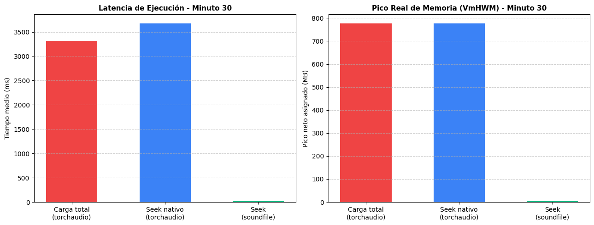
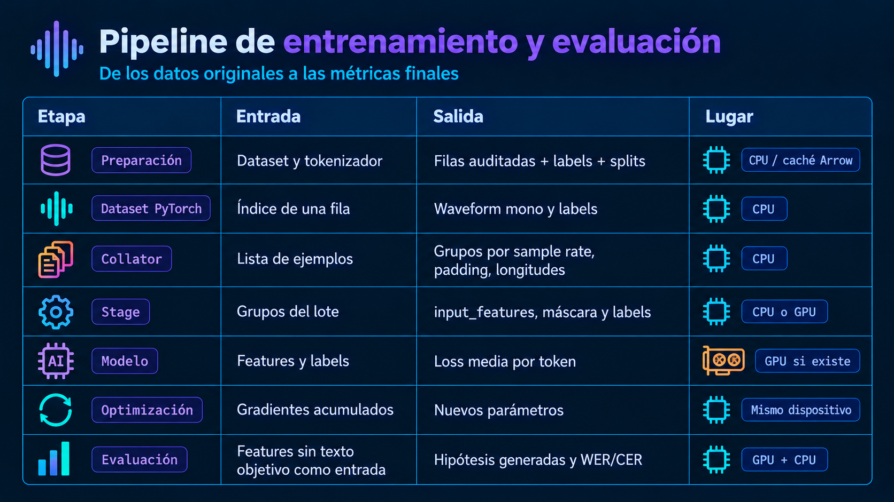
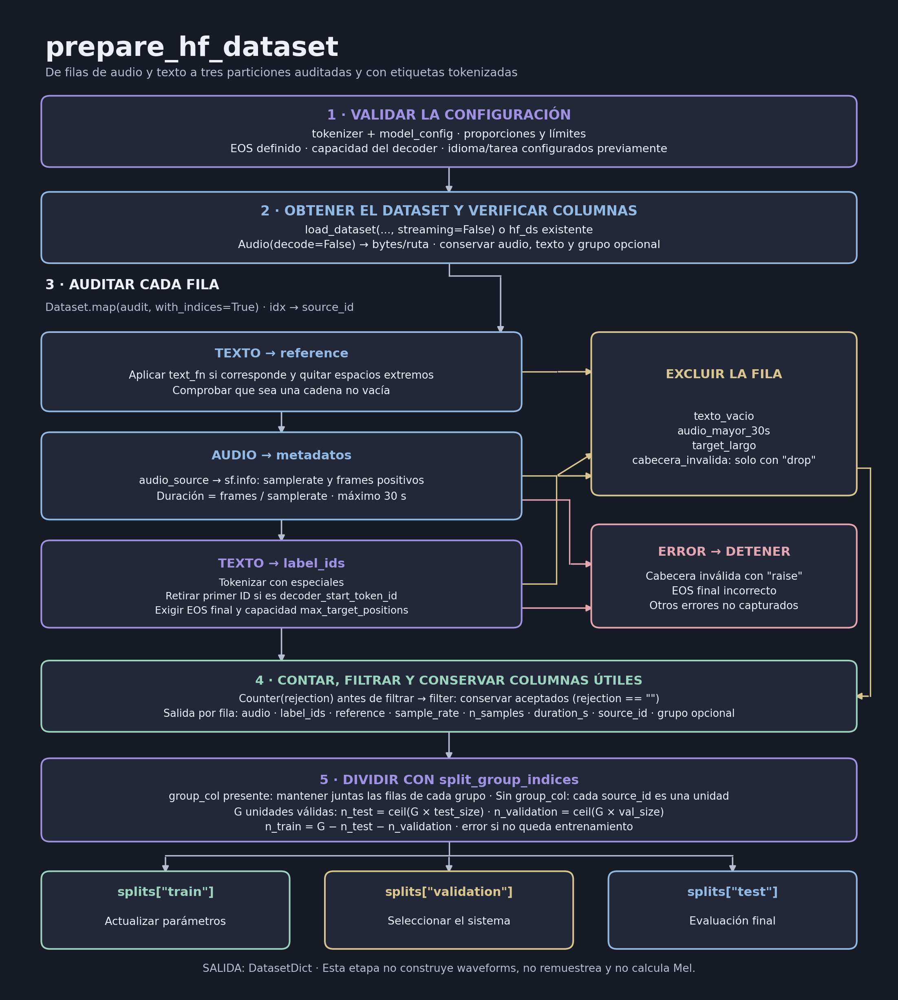
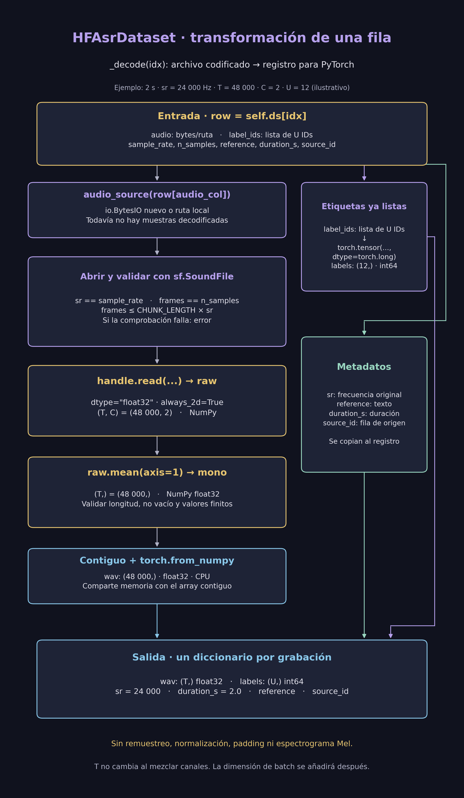
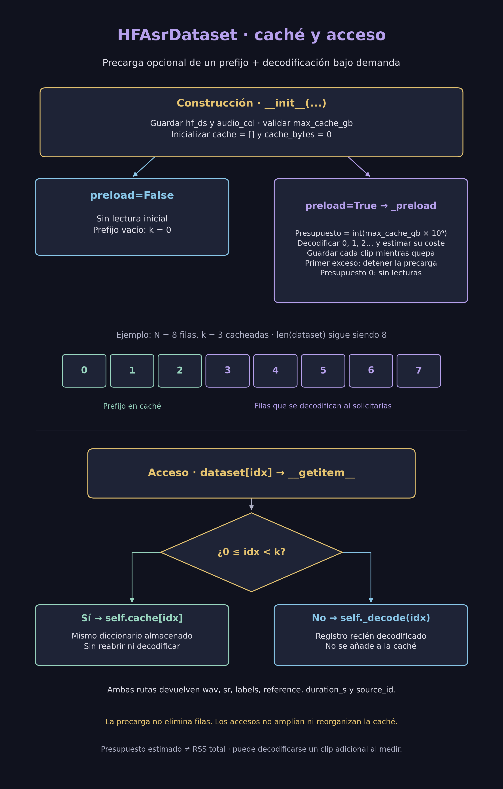
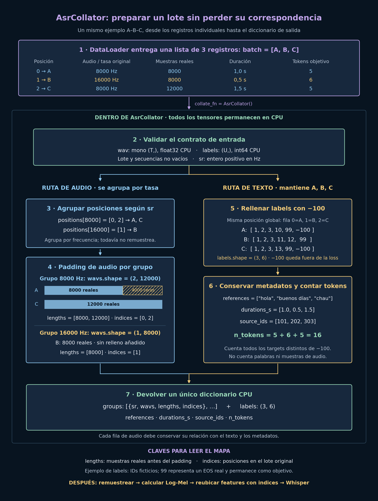
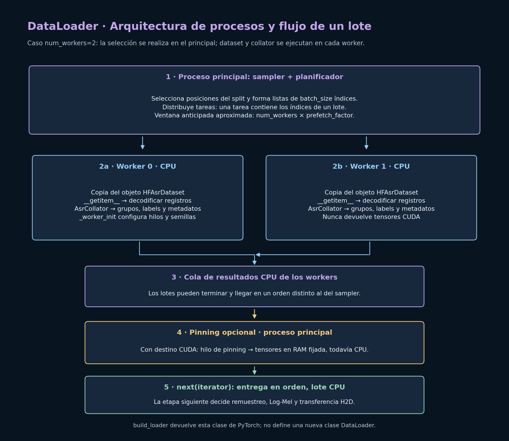
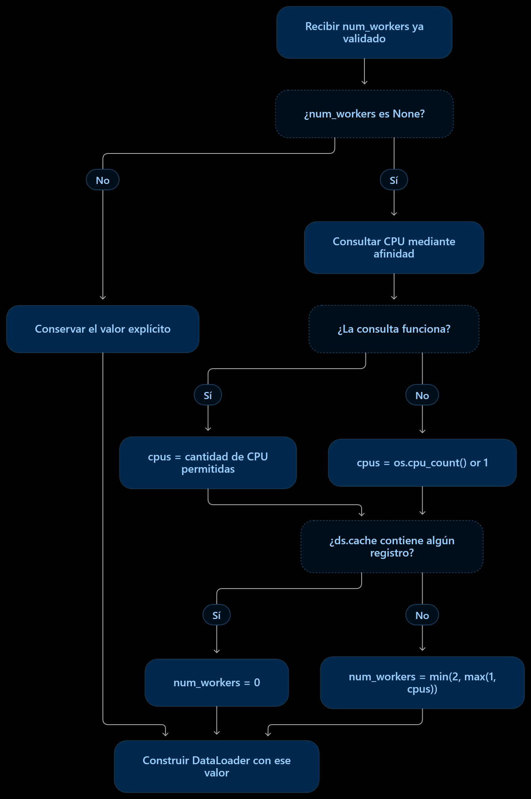
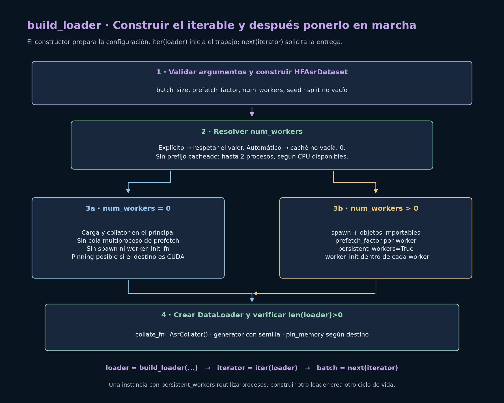
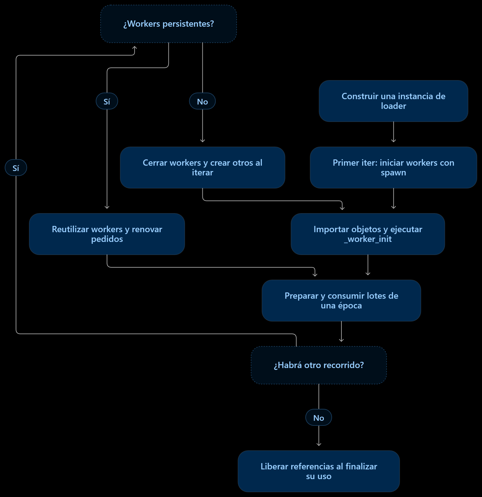

Procesamiento del Lenguaje Natural y Reconocimiento del Habla · Clases 20–23
20–23 · Whisper: datasets, entrenamiento e inferencia
Contenido convertido sin ejecutar Python. Se conservan el texto, el código y las salidas guardadas del notebook; los tiempos y resultados corresponden a su ejecución original. Las rutas personales de Google Drive se muestran como /content/images y /content/audio.
En esta página
17.2. Resumen del PipelineCelda 1: Instalación de Dependencias en Google ColabCelda 2: Importación de LibreríasCelda 3: Configuración del Entorno y Constantes GlobalesCelda 4: Remuestreo Polifásico con Memoria Caché en GPU/CPUCelda 5: BenchmarkingCelda 6: Implementación de get_mel_transform y pad_or_trimCelda 7: Implementación de log_mel_spectrogram y extract_whisper_features17.3. Datasets, Entrenamiento e Inferencia Eficiente de Whisper: Métricas, Benchmarks y Pruebas17.3.1. Idea General: Corregir el Contrato Antes de Optimizar17.3.2. Entorno, Dependencias y Módulo Importable para Colab17.3.3. Preparación del Dataset: Auditoría, Tokenización y Splits17.3.4. HFAsrDataset : Decodificación Bajo Demanda y Caché Parcial17.3.5. AsrCollator : Padding, Grupos y Longitudes Reales17.3.6. DataLoader: Procesos, Prefetch y Memoria Fijada17.3.7. GpuFeatureStage : Remuestreo, Log-Mel y Máscara Temporal17.3.8. DevicePrefetcher : Streams de CUDA, Eventos y Vida de Memoria17.3.9. Modelo, Precisión Mixta, SDPA y Gradient Checkpointing17.3.20. Límites, Decisiones de Diseño y FuentesCelda 1: Instalación de Dependencias en Google Colab
Código Python · celda 3
# Instala las librerías necesarias con compatibilidad asegurada para CUDA en Colab
!pip install -q soundfile transformers datasets accelerate
Código Python · celda 4
from google.colab import drive
from IPython.display import Image
drive.mount('/content/drive')
Mounted at /content/drive
Código Python · celda 5
root_path = r"/content/images"
root_class_path = f"{root_path}/clase-18"
Celda 2: Importación de Librerías
Código Python · celda 7
"""
Pipeline de preprocesamiento de audio optimizado para ASR con Whisper en Google Colab.
Implementa procesamiento distribuido CPU/GPU, SpecAugment, y remuestreo vectorial.
"""
# Importaciones del sistema y utilidades base
from __future__ import annotations # Habilita tipado pospuesto compatible con Python moderno
import io # Manejo de flujos de bytes en memoria para conjuntos de datos
import math # Operaciones matemáticas escalares
import os # Operaciones con variables de entorno y sistema de archivos
from concurrent.futures import ThreadPoolExecutor # Paralelización de lectura de cabeceras de audio
from functools import lru_cache # Memoización de kernels de remuestreo en memoria caché
from typing import Callable, Dict, List, Optional, Sequence, Tuple, Union # Anotaciones de tipos estrictas
# Importaciones para procesamiento numérico y de audio
import numpy as np
import soundfile as sf # Lectura eficiente de audio basada en la API de C de libsndfile
import torch
import torch.nn as nn
import torch.nn.functional as F # Operaciones funcionales (relleno, activaciones)
import torchaudio # Procesamiento de audio y transformadas espectrales
import torchaudio.transforms as T # Transformadores especializados de audio
from torch.utils.data import DataLoader, Dataset # Abstracciones para carga y gestión de datos
Celda 3: Configuración del Entorno y Constantes Globales
Código Python · celda 9
# Configuración de entorno para mitigar bloqueos entre subprocesos de tokenizadores de Hugging Face
os.environ.setdefault("TOKENIZERS_PARALLELISM", "false") # Desactiva fork conflictivo en workers
Código Python · celda 10
# =========================================================================== #
# CONSTANTES GLOBALES DE LA ARQUITECTURA WHISPER
# =========================================================================== #
SAMPLE_RATE: int = 16_000 # Frecuencia de muestreo estándar exigida por Whisper en Hz
N_FFT: int = 400 # Tamaño de la ventana de la transformada rápida de Fourier (25 ms a 16 kHz)
WIN_LENGTH: int = 400 # Longitud efectiva de la ventana de análisis Hann
HOP_LENGTH: int = 160 # Desplazamiento temporal entre tramas de análisis sucesivas (10 ms a 16 kHz)
N_MELS_V2: int = 80 # Cantidad de filtros Mel en Whisper v1/v2 (tiny, base, small, medium, large-v2)
N_MELS_V3: int = 128 # Cantidad de filtros Mel en Whisper v3 / v3-Turbo
CHUNK_LENGTH: int = 30 # Ventana temporal fija esperada por el codificador de Whisper en segundos
N_SAMPLES: int = CHUNK_LENGTH * SAMPLE_RATE # Número total de muestras por fragmento (exactamente 480 000)
N_FRAMES: int = N_SAMPLES // HOP_LENGTH # Número total de tramas espectrales temporales (3000)
LOG_FLOOR: float = 1e-10
LOG_DYNAMIC_RANGE: float = 8.0
# Alias de tipo para fuentes de audio aceptadas por el cargador
AudioSource = Union[str, os.PathLike, io.BytesIO] # Permite rutas físicas o streams binarios
Celda 4: Remuestreo Polifásico con Memoria Caché en GPU/CPU
Código Python · celda 12
# =========================================================================== #
# 1. REMUESTREO POLIFÁSICO CON MEMORIA CACHÉ EN GPU / CPU
# =========================================================================== #
_RESAMPLE_PRESETS: Dict[str, dict] = { # Diccionario con configuraciones de filtros sinc
"fast": dict( # Modo de alto rendimiento ideal para entrenamiento intensivo
resampling_method="sinc_interp_hann", # Interpolación sinc suavizada con ventana Hann
lowpass_filter_width=6, # Número de cruces por cero de la sinc que se consideran a cada lado, es decir, cuánto se extiende el filtro
rolloff=0.99, # Frecuencia de corte al 99 % de la frecuencia de Nyquist
), # Fin de la definición del ajuste rápido
"best": dict( # Modo de máxima fidelidad para inferencia o evaluación rigurosa
resampling_method="sinc_interp_kaiser", # Interpolación sinc con ventana Kaiser-Bessel
lowpass_filter_width=64, # Filtro extendido para atenuar artefactos de solapamiento
rolloff=0.9475937167399596, # Corte según optimización empírica de resampy
beta=14.769656459379492, # Parámetro de forma beta de la ventana Kaiser
), # Fin de la definición del ajuste óptimo
} # Fin del diccionario de ajustes predefinidos
Celda 4.1.: Implementación del Remuestreo
Código Python · celda 14
@lru_cache(maxsize=32) # Cachea hasta 32 combinaciones de argumentos; descarta la menos usada
def get_resampler(
orig_freq: int,
new_freq: int = SAMPLE_RATE,
quality: str = "fast",
device: str = "cpu",
) -> T.Resample:
"""Construye y almacena en memoria caché un operador de remuestreo torchaudio.
Calcula el kernel (banco de filtros) sinc polifásico una sola vez y la preserva
en el dispositivo especificado para evitar recálculos en cada lote.
Args:
orig_freq (int): Frecuencia de muestreo original del audio en Hz.
new_freq (int, optional): Frecuencia de muestreo de destino en Hz. Por defecto 16000.
quality (str, optional): Calidad del kernel ("fast" o "best"). Por defecto "fast".
device (str, optional): Dispositivo de destino ('cpu' o 'cuda'). Por defecto "cpu".
Returns:
torchaudio.transforms.Resample: Módulo listo en modo evaluación en el dispositivo destino.
Raises:
ValueError: Si el parámetro quality no coincide con los ajustes permitidos.
"""
if quality not in _RESAMPLE_PRESETS: # Comprobación defensiva de parámetros
raise ValueError(f"Calidad no válida: {quality}. Use {_RESAMPLE_PRESETS.keys()}") # Error si la calidad no es un preset válido
resampler = T.Resample( # Instanciación de la transformada de remuestreo
orig_freq=orig_freq, # Tasa de muestreo entrante
new_freq=new_freq, # Tasa de muestreo objetivo
**_RESAMPLE_PRESETS[quality], # Desempaquetado de hiperparámetros del filtro
)
return resampler.to(device).eval() # Mueve al dispositivo solicitado y lo pone en modo evaluación
@torch.no_grad() # Inhibe el seguimiento del grafo computacional para ahorrar memoria
def resample_waveform(
wav: torch.Tensor,
orig_freq: int,
new_freq: int = SAMPLE_RATE,
quality: str = "fast",
) -> torch.Tensor:
"""Remuestrea un tensor de audio de forma arbitraria en su dispositivo actual.
Args:
wav (torch.Tensor): Tensor de audio con dimensiones (..., tiempo).
orig_freq (int): Tasa de muestreo de entrada en Hz.
new_freq (int, optional): Tasa de muestreo deseada en Hz. Por defecto 16000.
quality (str, optional): Ajuste predefinido del filtro. Por defecto "fast".
Returns:
torch.Tensor: Tensor remuestreado con dimensiones coincidentes salvo la última.
"""
if int(orig_freq) == int(new_freq): # Verificación de bypass directo
return wav # Retorna el mismo tensor (sin copiarlo) si las tasas coinciden
resampler = get_resampler(int(orig_freq), int(new_freq), quality, str(wav.device)) # Obtiene (o reutiliza desde la caché) el remuestreador
return resampler(wav.float()) # Ejecuta la convolución garantizando precisión float32
Celda 4.2.: Implementación de Carga de Audio Optimizada
Código Python · celda 16
def load_audio_file(
source: AudioSource, # Ruta física del archivo o búfer binario en memoria
start_seconds: float = 0.0, # Desplazamiento inicial desde el inicio del archivo en segundos
max_seconds: Optional[float] = CHUNK_LENGTH, # Duración máxima a decodificar en segundos
) -> Tuple[torch.Tensor, int]: # Retorna el tensor mono 1D y la frecuencia de muestreo entera
"""Decodifica un fragmento temporal delimitado de audio y lo convierte a monoaural.
Extrae exclusivamente el intervalo [start_seconds, start_seconds + max_seconds)
sin descomprimir la totalidad del archivo en memoria principal. La decodificación
primaria se realiza a través de libsndfile (soundfile). Si el formato no es compatible
con la biblioteca de bajo nivel del sistema (por ejemplo, contenedores MP3 en
versiones antiguas de libsndfile, M4A o AAC) y la fuente es una ruta física,
se recurre a librosa como mecanismo de respaldo secundario.
No realiza remuestreo: preserva intacta la frecuencia de muestreo original
del archivo para delegar cualquier transformación posterior a la GPU.
Args:
source (AudioSource): Ruta del archivo en disco (str o os.PathLike) o flujo
de bytes en memoria (io.BytesIO).
start_seconds (float, optional): Punto de inicio de la decodificación en
segundos respecto al origen del audio. Por defecto 0.0.
max_seconds (Optional[float], optional): Cantidad máxima de segundos a
decodificar a partir de start_seconds. Si es None, decodifica desde
start_seconds hasta el final del archivo. Por defecto CHUNK_LENGTH (30).
Returns:
Tuple[torch.Tensor, int]: Tupla que contiene:
* waveform (torch.Tensor): Tensor unidimensional de forma (tiempo,) con
tipo de dato torch.float32, ubicado en memoria CPU y en formato contiguo.
* sample_rate (int): Frecuencia de muestreo original del archivo en hercios.
Raises:
ValueError: Si start_seconds es menor que 0.0, o si max_seconds está definido
y es menor o igual a 0.0.
RuntimeError: Si la decodificación falla con soundfile al procesar un flujo
io.BytesIO, o si fallan sucesivamente soundfile y el respaldo de librosa
al leer un archivo en disco.
"""
if start_seconds < 0.0: # Comprobación de no negatividad para el desplazamiento inicial
raise ValueError(f"start_seconds debe ser mayor o igual a 0.0, se recibió: {start_seconds}.") # Error
if max_seconds is not None and max_seconds <= 0.0: # Validación de duración estrictamente positiva
raise ValueError(f"max_seconds debe ser un valor positivo o None, se recibió: {max_seconds}.") # Error
if isinstance(source, io.BytesIO): # Comprueba si el origen es un flujo en memoria RAM
source.seek(0) # Rebobina el cursor de lectura al byte inicial del búfer
try: # Bloque primario de decodificación de alto rendimiento mediante soundfile
with sf.SoundFile(source) as audio_file: # Abre el descriptor del archivo mediante libsndfile
sample_rate: int = int(audio_file.samplerate) # Frecuencia de muestreo declarada en hercios
total_frames: int = audio_file.frames # Total de tramas registradas en la cabecera
start_frame: int = int(round(start_seconds * sample_rate)) # Conversión de segundos a tramas
if start_frame > 0: # Verifica si se solicitó un desplazamiento temporal no nulo
if audio_file.seekable(): # Verifica si el contenedor admite desplazamiento directo
target_frame: int = min(start_frame, total_frames) if total_frames > 0 else start_frame # Cota
audio_file.seek(target_frame) # Desplaza el cursor de lectura a la trama objetivo
else: # Si el flujo de entrada no admite la operación seek aleatoria
audio_file.read(frames=start_frame, dtype="float32", always_2d=True) # Lee y descarta
frames_to_read: int = int(round(max_seconds * sample_rate)) if max_seconds is not None else -1 # Límite
raw_audio = audio_file.read(frames=frames_to_read, dtype="float32", always_2d=True) # Lee (T, C)
if raw_audio.shape[1] == 1: # Comprueba si la pista contiene únicamente un canal
mono_data = raw_audio[:, 0] # Extrae el canal único directamente sin cómputo extra
else: # Si la pista es multicanal (estéreo, 5.1, etc.)
mono_data = raw_audio.mean(axis=1, dtype=np.float32) # Promedia los canales en coma flotante
except Exception as exc_soundfile: # Captura fallos de libsndfile o formatos no reconocidos
if isinstance(source, io.BytesIO): # Los flujos en memoria no pueden delegarse a librosa por ruta
raise RuntimeError( # Genera excepción explicativa para búferes corruptos o incompatibles
f"soundfile no pudo decodificar el búfer binario: {exc_soundfile}" # Detalle del error
) from exc_soundfile # Asocia la causa de la excepción original
try: # Bloque secundario de contingencia utilizando librosa para formatos restringidos
import librosa # Importación diferida para no penalizar el tiempo de arranque general
file_path: str = os.fspath(source) # Convierte objetos PathLike o str a cadena de texto
mono_data, sr_librosa = librosa.load( # Decodificación secundaria con soporte extendido
path=file_path, # Ruta física del archivo en el sistema de almacenamiento
sr=None, # Evita el remuestreo automático en CPU preservando la tasa nativa
mono=True, # Aplica mezcla descendente automática a monoaural
offset=start_seconds, # Desplazamiento inicial en segundos
duration=max_seconds, # Duración del segmento a decodificar en segundos
dtype=np.float32, # Fuerza precisión de coma flotante de 32 bits
)
sample_rate = int(sr_librosa) # Asignación de la frecuencia de muestreo entera resultante
except Exception as exc_librosa: # Si ambos motores de decodificación fallan consecutivamente
raise RuntimeError( # Notifica el fallo exhaustivo encadenando los errores capturados
f"No se pudo decodificar el archivo '{source}'. " # Mensaje contextual de la ruta
f"Error con soundfile: {exc_soundfile} | Error con librosa: {exc_librosa}" # Errores
) from exc_librosa # Enlaza la causa del último intento fallido
contiguous_array = np.ascontiguousarray(mono_data, dtype=np.float32) # Garantiza memoria contigua en C
waveform_tensor = torch.from_numpy(contiguous_array) # Crea el tensor de PyTorch compartiendo memoria
return waveform_tensor, sample_rate # Retorna el tensor unidimensional y la frecuencia entera
Celda 4.3.: Prueba Unitaria
Código Python · celda 18
import urllib.request
import matplotlib.pyplot as plt
import IPython.display as ipd
from datasets import load_dataset, Audio
# Cargamos el dataset MINDS-14 (habla en español) en modo streaming para no descargar gigabytes
print("Conectando con Hugging Face Datasets ('PolyAI/minds14', español)...")
ds = load_dataset("PolyAI/minds14", name="es-ES", split="train", streaming=True)
# Configuramos decode=False para recibir los bytes en crudo (igual que en HFAsrDataset)
ds = ds.cast_column("audio", Audio(decode=False))
muestra = next(iter(ds))
audio_bytes = muestra["audio"]["bytes"]
texto_referencia = muestra["transcription"]
print(f" Muestra obtenida. Transcripción: \"{texto_referencia}\"")
# Envolvemos los bytes en un buffer io.BytesIO
buffer_memoria = io.BytesIO(audio_bytes)
# Llamamos a load_audio_file con el buffer binario
wav_hf, sr_hf = load_audio_file(buffer_memoria, max_seconds=10.0, start_seconds=0.0)
print(f"\n[Audio desde io.BytesIO]")
print(f" * Forma del tensor: {wav_hf.shape}")
print(f" * Frecuencia de muestreo: {sr_hf} Hz")
print(f" * Duración: {len(wav_hf) / sr_hf:.2f} segundos")
assert not torch.isnan(wav_hf).any(), "El tensor contiene valores NaN"
print(" Decodificación de flujo en memoria verificada exitosamente.")
print("Escuchar audio decodificado desde Hugging Face (BytesIO):")
ipd.display(ipd.Audio(wav_hf.numpy(), rate=sr_hf))
Conectando con Hugging Face Datasets ('PolyAI/minds14', español)...
Warning: You are sending unauthenticated requests to the HF Hub. Please set a HF_TOKEN to enable higher rate limits and faster downloads. WARNING:huggingface_hub.utils._http:Warning: You are sending unauthenticated requests to the HF Hub. Please set a HF_TOKEN to enable higher rate limits and faster downloads.
Muestra obtenida. Transcripción: "hola buenas a ver tengo un problema con vuestra aplicación resulta que quiero hacer una transferencia bancaria a una cuenta conocida" [Audio desde io.BytesIO] * Forma del tensor: torch.Size([80000]) * Frecuencia de muestreo: 8000 Hz * Duración: 10.00 segundos Decodificación de flujo en memoria verificada exitosamente. Escuchar audio decodificado desde Hugging Face (BytesIO):
Celda 5: Benchmarking
Celda 5.1.: Importación de Librerías
Código Python · celda 21
# =========================================================================== #
# 1. Importación de Librerías
# =========================================================================== #
import gc
import os
import time
from multiprocessing import Process, Queue
from typing import Callable, Dict, Tuple
import matplotlib.pyplot as plt
import numpy as np
import psutil
import soundfile as sf
import torch
import torchaudio
import resource
LOCAL_AUDIO_PATH = "/content/audio/audio_sample_1hour_dateunvlog.wav"
Celda 5.2.: Estrategias de Extracción de Segmentos en Audio de Larga Duración
Código Python · celda 23
# =========================================================================== #
# 2. Estrategias de Extracción de Segmentos en Audio de Larga Duración
# =========================================================================== #
def metodo_a_torchaudio_ingenuo(
ruta: str, inicio_s: float, duracion_s: float
) -> Tuple[torch.Tensor, int]:
"""Carga la totalidad del archivo de audio en RAM y recorta el segmento solicitado.
Esta implementación decodifica el contenedor multimedia completo en un
tensor de PyTorch antes de calcular los índices de corte temporal. Presenta
una complejidad temporal y espacial O(N) proporcional a la duración total
del archivo, por lo que sirve exclusivamente como línea base de comparación.
Args:
ruta (str): Ruta absoluta o relativa al archivo de audio en disco.
inicio_s (float): Desplazamiento temporal inicial en segundos desde
donde comenzará la extracción.
duracion_s (float): Ventana temporal en segundos a recortar a partir del
punto de inicio.
Returns:
Tuple[torch.Tensor, int]: Tupla compuesta por:
- chunk (torch.Tensor): Tensor unidimensional (muestras,) en formato
mono, contiguo en memoria y con tipo de dato float32.
- sample_rate (int): Frecuencia de muestreo del audio en Hz.
Notes:
Si el audio original es estéreo o multicanal, se realiza un promedio
lineal a lo largo del eje de canales para garantizar salida monoaural.
"""
waveform, sample_rate = torchaudio.load(ruta)
if waveform.shape[0] > 1:
waveform = waveform.mean(dim=0, keepdim=True)
start_frame = int(inicio_s * sample_rate)
num_frames = int(duracion_s * sample_rate)
chunk = waveform[:, start_frame : start_frame + num_frames].squeeze(0)
return chunk.contiguous(), sample_rate
def metodo_b_torchaudio_nativo(
ruta: str, inicio_s: float, duracion_s: float
) -> Tuple[torch.Tensor, int]:
"""Decodifica un segmento de audio usando los parámetros de desplazamiento de torchaudio.
Inspecciona previamente los metadatos del encabezado para inferir la tasa de
muestreo sin leer el flujo de datos. Posteriormente, calcula los índices
exactos de tramas y solicita a `torchaudio.load` la decodificación puntual
mediante `frame_offset` y `num_frames`.
Args:
ruta (str): Ruta absoluta o relativa al archivo físico en almacenamiento.
inicio_s (float): Segundo exacto donde inicia el fragmento deseado.
duracion_s (float): Extensión temporal en segundos del fragmento a
extraer.
Returns:
Tuple[torch.Tensor, int]: Tupla compuesta por:
- waveform (torch.Tensor): Tensor monoaural continuo de forma
(muestras,) con las tramas extraídas.
- sr (int): Tasa de muestreo detectada en el archivo en Hz.
Notes:
La eficiencia de esta función depende estrictamente del backend activo
en TorchAudio (FFmpeg, SoX o SoundFile). En backends basados en streaming
de paquetes secuenciales (como FFmpeg en contenedores WAV), puede ocurrir
un recorrido interno del flujo de datos antes de aplicar el corte.
"""
# Inspección de cabecera sin decodificación de muestras
if hasattr(torchaudio, "info"):
sample_rate = torchaudio.info(ruta).sample_rate
elif hasattr(torchaudio, "load_info"):
sample_rate = torchaudio.load_info(ruta)[0].rate
else:
sample_rate = sf.info(ruta).samplerate
start_frame = int(inicio_s * sample_rate)
num_frames = int(duracion_s * sample_rate)
# Decodificación acotada al rango de tramas
waveform, sr = torchaudio.load(
ruta, frame_offset=start_frame, num_frames=num_frames
)
if waveform.shape[0] > 1:
waveform = waveform.mean(dim=0, keepdim=True)
return waveform.squeeze(0).contiguous(), sr
def metodo_c_soundfile_seek(
ruta: str, inicio_s: float, duracion_s: float
) -> Tuple[torch.Tensor, int]:
"""Extrae un fragmento de audio mediante desplazamiento directo en disco con soundfile.
Aprovecha la interfaz C de `libsndfile` para calcular el desplazamiento
físico en bytes y realizar una operación `lseek` directamente a nivel del
sistema operativo. Carga en memoria principal únicamente el bloque
correspondiente a la ventana solicitada, manteniendo una complejidad de
memoria O(K) dependiente solo del tamaño del recorte.
Args:
ruta (str): Ruta al archivo de audio en disco (típicamente contenedor WAV/PCM).
inicio_s (float): Marca de tiempo inicial en segundos para el salto de lectura.
duracion_s (float): Longitud total de la ventana requerida en segundos.
Returns:
Tuple[torch.Tensor, int]: Tupla compuesta por:
- tensor_audio (torch.Tensor): Segmento de audio transformado a
tensor de PyTorch monoaural y contiguo.
- sample_rate (int): Frecuencia de muestreo original del archivo en Hz.
See Also:
load_audio_file: Función de bajo nivel encargada de abrir el puntero `SoundFile`,
posicionar el cabezal mediante `seek()` y convertir el arreglo NumPy a PyTorch.
"""
return load_audio_file(ruta, start_seconds=inicio_s, max_seconds=duracion_s)
Celda 5.3.: Instrumentación de Memoria del Kernel
Código Python · celda 25
# =========================================================================== #
# 3. Instrumentación de Memoria del Kernel (/proc/self)
# =========================================================================== #
def _leer_status_kb(campo: str) -> int:
"""Lee un campo numérico de ``/proc/self/status`` y lo devuelve en KB.
``/proc/self/status`` es un pseudo-archivo que expone el kernel de Linux
con estadísticas del proceso que lo lee. Cada línea tiene el formato
``Campo: <valor> kB``. Esta función busca la línea cuyo nombre coincide
con ``campo`` y devuelve su valor numérico.
Args:
campo: Nombre exacto del campo a buscar, sin los dos puntos.
Ejemplos útiles:
- ``"VmRSS"``: memoria residente actual (RAM física en uso).
- ``"VmHWM"``: pico histórico del RSS ("High-Water Mark").
Returns:
Valor del campo en kilobytes.
Raises:
RuntimeError: Si el campo no existe en ``/proc/self/status``.
FileNotFoundError: Si el sistema no tiene ``/proc`` (p. ej. Windows
o macOS).
Note:
Solo funciona en Linux.
Example:
>>> _leer_status_kb("VmRSS") # doctest: +SKIP
152340
"""
with open("/proc/self/status") as f:
for linea in f:
if linea.startswith(f"{campo}:"):
return int(linea.split()[1])
raise RuntimeError(f"Campo {campo} no encontrado en /proc/self/status")
def _resetear_pico_rss() -> None:
"""Reinicia el pico de memoria (``VmHWM``) al valor actual de ``VmRSS``.
Normalmente ``VmHWM`` solo crece durante la vida del proceso. Escribir el
valor ``5`` en ``/proc/self/clear_refs`` le pide al kernel que reinicie
ese máximo histórico al RSS actual. Así se puede medir el pico de una
sección concreta del código y no el de todo el proceso.
Returns:
None. El efecto es sobre el estado del kernel para este proceso.
Raises:
PermissionError: Si el entorno no permite escribir en ``clear_refs``
(algunos contenedores o sandboxes lo restringen).
FileNotFoundError: Si el sistema no es Linux o el kernel es anterior
a 4.0, donde el valor ``5`` no está soportado.
Note:
Valores de ``clear_refs`` como ``1``-``4`` limpian bits de páginas;
``5`` es el que reinicia ``VmHWM``.
"""
with open("/proc/self/clear_refs", "w") as f:
f.write("5")
def _medir_pico_en_proceso(
funcion_lectura: Callable[[str, float, float], Any],
ruta: str,
inicio_s: float,
duracion_s: float,
cola: Queue,
) -> None:
"""Mide el pico de memoria que consume una función de lectura de audio.
Está pensada como ``target`` de un ``multiprocessing.Process``. Correr la
medición en un proceso hijo recién creado evita que la memoria acumulada
por el proceso padre (modelos cargados, cachés, etc.) contamine el
resultado.
Procedimiento:
1. Fuerza el recolector de basura para partir de un estado limpio.
2. Reinicia el pico (``VmHWM``) al RSS actual.
3. Registra el RSS base (``VmRSS``).
4. Ejecuta ``funcion_lectura`` y descarta su resultado.
5. Lee el nuevo ``VmHWM`` y calcula el pico neto como ``VmHWM - base``.
6. Envía ambos valores al proceso padre por la cola.
Args:
funcion_lectura: Callable con firma
``(ruta, inicio_s, duracion_s)`` que carga un fragmento de audio.
ruta: Ruta al archivo de audio que se va a leer.
inicio_s: Segundo desde el cual empieza la lectura.
duracion_s: Duración, en segundos, del fragmento a leer.
cola: ``multiprocessing.Queue`` donde se deposita el resultado.
Returns:
None. El resultado se entrega por ``cola`` como un diccionario con:
- ``"pico_neto_mb"`` (float): memoria extra usada por la lectura
(pico menos base), en MB y nunca negativa.
- ``"pico_abs_mb"`` (float): pico absoluto de RSS del proceso, en MB.
Note:
Solo Linux. Si ``funcion_lectura`` lanza una excepción, el proceso
hijo termina sin poner nada en la cola, así que el padre debe usar
``cola.get(timeout=...)`` y revisar el ``exitcode``.
"""
gc.collect()
_resetear_pico_rss()
base_kb = _leer_status_kb("VmRSS")
# Ejecución de la rutina analizada
_ = funcion_lectura(ruta, inicio_s, duracion_s)
pico_kb = _leer_status_kb("VmHWM")
cola.put(
{
"pico_neto_mb": max(0.0, (pico_kb - base_kb) / 1024.0),
"pico_abs_mb": pico_kb / 1024.0,
}
)
Celda 5.4.: Ejecución de la Instrumentación
Código Python · celda 27
def ejecutar_benchmark_metodo(
nombre_metodo: str,
funcion_lectura: Callable[[str, float, float], Tuple[torch.Tensor, int]],
ruta_archivo: str,
inicio_segundos: float,
duracion_segundos: float,
num_iter_tiempo: int = 5,
num_iter_memoria: int = 3,
) -> Dict[str, float]:
"""Mide la latencia y el pico de memoria de un método de lectura de audio.
Las dos métricas se miden por separado porque requieren condiciones
distintas:
- **Tiempo:** se mide en el proceso actual, con una ejecución de
precalentamiento descartada y ``num_iter_tiempo`` repeticiones medidas.
- **Memoria:** cada repetición se ejecuta en un proceso hijo nuevo
(ver ``_medir_pico_en_proceso``), para que el estado acumulado del
proceso principal no contamine el pico medido.
Args:
nombre_metodo: Etiqueta del método, solo para mostrar en pantalla.
funcion_lectura: Callable con firma ``(ruta, inicio_s, duracion_s)``
que devuelve una tupla ``(tensor, frecuencia_de_muestreo)``.
ruta_archivo: Ruta al archivo de audio que se va a leer.
inicio_segundos: Segundo desde el cual comienza el fragmento.
duracion_segundos: Duración del fragmento, en segundos.
num_iter_tiempo: Cantidad de repeticiones medidas para la latencia
(sin contar el precalentamiento). Por defecto 5.
num_iter_memoria: Cantidad de procesos hijos lanzados para medir la
memoria. Por defecto 3.
Returns:
Diccionario con cuatro claves, todas en ``float``:
- ``"tiempo_medio_ms"``: media de las latencias, en milisegundos.
- ``"tiempo_std_ms"``: desviación estándar de las latencias, en ms.
- ``"pico_neto_mb"``: **mediana** del pico neto de memoria (memoria
extra que necesitó la lectura), en MB.
- ``"pico_abs_mb"``: **mediana** del pico absoluto de RSS del
proceso, en MB.
Note:
- El tiempo usa la **media** y la memoria la **mediana**. La mediana
es más robusta ante un valor atípico cuando hay pocas muestras.
- La primera ejecución (precalentamiento) no se cuenta. Sirve para
que la caché del sistema de archivos y las inicializaciones
perezosas de las bibliotecas no inflen los tiempos. Por eso los
tiempos reportados corresponden a lecturas "en caliente".
- Requiere Linux, por depender de ``/proc/self``.
- ``cola.get()`` no tiene ``timeout``: si el proceso hijo falla antes
de enviar su resultado, el padre queda bloqueado esperando.
"""
print(f" -> Evaluando: {nombre_metodo}...")
# 1. Medición de tiempos de ejecución (precalentamiento + muestreo)
gc.collect()
_ = funcion_lectura(ruta_archivo, inicio_segundos, duracion_segundos)
tiempos_ms: List[float] = []
for _ in range(num_iter_tiempo):
gc.collect()
t0 = time.perf_counter()
_ = funcion_lectura(ruta_archivo, inicio_segundos, duracion_segundos)
t1 = time.perf_counter()
tiempos_ms.append((t1 - t0) * 1000.0)
# 2. Medición de pico de RAM real con procesos aislados
picos_netos: List[float] = []
picos_abs: List[float] = []
for _ in range(num_iter_memoria):
cola: Queue = Queue()
p = Process(
target=_medir_pico_en_proceso,
args=(
funcion_lectura,
ruta_archivo,
inicio_segundos,
duracion_segundos,
cola,
),
)
p.start()
res = cola.get()
p.join()
picos_netos.append(res["pico_neto_mb"])
picos_abs.append(res["pico_abs_mb"])
return {
"tiempo_medio_ms": float(np.mean(tiempos_ms)),
"tiempo_std_ms": float(np.std(tiempos_ms)),
"pico_neto_mb": float(np.median(picos_netos)),
"pico_abs_mb": float(np.median(picos_abs)),
}
Código Python · celda 28
# =========================================================================== #
# 3. EJECUCIÓN PRINCIPAL Y COMPARACIÓN
# =========================================================================== #
if not os.path.exists(LOCAL_AUDIO_PATH):
print(f"Error: No se localizó el archivo en '{LOCAL_AUDIO_PATH}'.")
else:
print("=" * 88)
print("BENCHMARK MULTI-MÉTODO: EXTRACCIÓN DE SEGMENTOS EN AUDIO DE LARGA DURACIÓN")
print(f"Archivo de prueba: {LOCAL_AUDIO_PATH}")
print("=" * 88)
escenarios = [
("Escenario 1: Tramo inicial (0 s a 30 s)", 0.0, 30.0),
(
"Escenario 2: Tramo central (Minuto 30: 1800 s a 1830 s)",
1800.0,
30.0,
),
]
metodos = [
("1. torchaudio ingenuo (full load)", metodo_a_torchaudio_ingenuo),
("2. torchaudio nativo (frame_offset)", metodo_b_torchaudio_nativo),
("3. soundfile (seek optimizado)", metodo_c_soundfile_seek),
]
resumen_global: Dict[str, Dict[str, Dict[str, float]]] = {}
for etiqueta, seg_inicio, seg_duracion in escenarios:
print(f"\n▶ {etiqueta}")
print("-" * 88)
res_escenario: Dict[str, Dict[str, float]] = {}
for nombre, funcion in metodos:
metricas = ejecutar_benchmark_metodo(
nombre_metodo=nombre,
funcion_lectura=funcion,
ruta_archivo=LOCAL_AUDIO_PATH,
inicio_segundos=seg_inicio,
duracion_segundos=seg_duracion,
)
res_escenario[nombre] = metricas
print(
f" * {nombre:<36} | "
f"Tiempo: {metricas['tiempo_medio_ms']:7.2f} ms (±{metricas['tiempo_std_ms']:.1f}) | "
f"Pico Neto: {metricas['pico_neto_mb']:7.2f} MB | "
f"RSS Total: {metricas['pico_abs_mb']:7.2f} MB"
)
resumen_global[etiqueta] = res_escenario
# Comparativas de aceleración y reducción de RAM respecto al método ingenuo
t_base = res_escenario["1. torchaudio ingenuo (full load)"][
"tiempo_medio_ms"
]
t_torch_nat = res_escenario["2. torchaudio nativo (frame_offset)"][
"tiempo_medio_ms"
]
t_sf = res_escenario["3. soundfile (seek optimizado)"][
"tiempo_medio_ms"
]
m_base = res_escenario["1. torchaudio ingenuo (full load)"][
"pico_neto_mb"
]
m_torch_nat = res_escenario["2. torchaudio nativo (frame_offset)"][
"pico_neto_mb"
]
m_sf = res_escenario["3. soundfile (seek optimizado)"]["pico_neto_mb"]
print(
f"\n Aceleración: torchaudio nativo {t_base / t_torch_nat:.1f}x | soundfile {t_base / t_sf:.1f}x"
)
print(
f" Reducción RAM: torchaudio nativo {m_base / max(0.01, m_torch_nat):.1f}x | soundfile {m_base / max(0.01, m_sf):.1f}x"
)
# ======================================================================= #
# 4. GRÁFICOS COMPARATIVOS (Datos del Escenario 2)
# ======================================================================= #
datos_graf = resumen_global[
"Escenario 2: Tramo central (Minuto 30: 1800 s a 1830 s)"
]
etiquetas_x = ["Carga total\n(torchaudio)", "Seek nativo\n(torchaudio)", "Seek\n(soundfile)"]
tiempos_y = [datos_graf[k]["tiempo_medio_ms"] for k in datos_graf]
memorias_y = [datos_graf[k]["pico_neto_mb"] for k in datos_graf]
colores = ["#ef4444", "#3b82f6", "#10b981"]
fig, (ax_tiempo, ax_memoria) = plt.subplots(1, 2, figsize=(13, 5))
# Latencia
ax_tiempo.bar(etiquetas_x, tiempos_y, color=colores, width=0.55)
ax_tiempo.set_title(
"Latencia de Ejecución - Minuto 30", fontsize=11, fontweight="bold"
)
ax_tiempo.set_ylabel("Tiempo medio (ms)")
ax_tiempo.grid(axis="y", linestyle="--", alpha=0.6)
# Memoria neta (VmHWM - VmRSS base)
ax_memoria.bar(etiquetas_x, memorias_y, color=colores, width=0.55)
ax_memoria.set_title(
"Pico Real de Memoria (VmHWM) - Minuto 30",
fontsize=11,
fontweight="bold",
)
ax_memoria.set_ylabel("Pico neto asignado (MB)")
ax_memoria.grid(axis="y", linestyle="--", alpha=0.6)
plt.tight_layout()
plt.show()
======================================================================================== BENCHMARK MULTI-MÉTODO: EXTRACCIÓN DE SEGMENTOS EN AUDIO DE LARGA DURACIÓN Archivo de prueba: /content/audio/audio_sample_1hour_dateunvlog.wav ======================================================================================== ▶ Escenario 1: Tramo inicial (0 s a 30 s) ---------------------------------------------------------------------------------------- -> Evaluando: 1. torchaudio ingenuo (full load)... * 1. torchaudio ingenuo (full load) | Tiempo: 5098.86 ms (±1908.5) | Pico Neto: 868.50 MB | RSS Total: 2453.82 MB -> Evaluando: 2. torchaudio nativo (frame_offset)... * 2. torchaudio nativo (frame_offset) | Tiempo: 3270.50 ms (±642.5) | Pico Neto: 777.76 MB | RSS Total: 2358.72 MB -> Evaluando: 3. soundfile (seek optimizado)... * 3. soundfile (seek optimizado) | Tiempo: 26.69 ms (±8.1) | Pico Neto: 3.78 MB | RSS Total: 1584.75 MB Aceleración: torchaudio nativo 1.6x | soundfile 191.0x Reducción RAM: torchaudio nativo 1.1x | soundfile 229.7x ▶ Escenario 2: Tramo central (Minuto 30: 1800 s a 1830 s) ---------------------------------------------------------------------------------------- -> Evaluando: 1. torchaudio ingenuo (full load)... * 1. torchaudio ingenuo (full load) | Tiempo: 3318.61 ms (±729.6) | Pico Neto: 776.46 MB | RSS Total: 2463.16 MB -> Evaluando: 2. torchaudio nativo (frame_offset)... * 2. torchaudio nativo (frame_offset) | Tiempo: 3676.91 ms (±810.3) | Pico Neto: 777.15 MB | RSS Total: 2464.16 MB -> Evaluando: 3. soundfile (seek optimizado)... * 3. soundfile (seek optimizado) | Tiempo: 20.52 ms (±5.8) | Pico Neto: 3.78 MB | RSS Total: 1690.79 MB Aceleración: torchaudio nativo 0.9x | soundfile 161.7x Reducción RAM: torchaudio nativo 1.0x | soundfile 205.3x

Celda 6: Implementación de get_mel_transform y pad_or_trim
Código Python · celda 30
@lru_cache(maxsize=8) # Un transform por combinación (n_mels, device)
def get_mel_transform(n_mels: int = 80, device: str = "cpu") -> T.MelSpectrogram:
"""Construye y cachea el operador STFT + banco Mel con los parámetros de Whisper.
Delega en ``torchaudio.transforms.MelSpectrogram`` el enventanado, la FFT y
la proyección Mel. La ventana de Hann y el banco de filtros se calculan una
sola vez y quedan como buffers en el dispositivo indicado.
Args:
n_mels (int, optional): Canales Mel. 80 para la mayoría de los modelos
Whisper y 128 para ``large-v3``. Por defecto 80.
device (str, optional): Dispositivo de destino ('cpu' o 'cuda'). Por defecto "cpu".
Returns:
torchaudio.transforms.MelSpectrogram: Módulo en modo evaluación, listo
para recibir tensores float32 de forma (..., tiempo) a 16 kHz.
Raises:
ValueError: Si ``n_mels`` no es 80 ni 128.
Note:
- ``center=True`` con ``pad_mode="reflect"`` agrega ``N_FFT // 2``
muestras reflejadas a cada borde. Por eso una señal de 30 s produce
3001 tramas y no 3000 (ver ``log_mel_spectrogram``).
- ``norm="slaney"`` y ``mel_scale="slaney"`` reproducen el banco de
filtros que Whisper generó con librosa.
- ``power=2.0`` devuelve el espectro de potencia (|STFT|²).
"""
if n_mels not in (80, 128): # Comprobación defensiva de parámetros
raise ValueError(f"n_mels debe ser 80 o 128, se recibió: {n_mels}")
mel = T.MelSpectrogram(
sample_rate=SAMPLE_RATE, # Frecuencia de muestreo de la señal
n_fft=N_FFT, # Tamaño de FFT: 25 ms
win_length=N_FFT, # Ventana de la misma longitud que la FFT
hop_length=HOP_LENGTH, # Salto entre ventanas: 10 ms
f_min=0.0, # Límite inferior del banco Mel
f_max=float(SAMPLE_RATE // 2), # Límite superior: Nyquist (8 kHz)
n_mels=n_mels, # Cantidad de canales Mel
window_fn=torch.hann_window, # Ventana de Hann (periódica por defecto)
power=2.0, # Espectro de potencia
normalized=False, # Sin normalización de la STFT
center=True, # Relleno en los bordes (convención de Whisper)
pad_mode="reflect", # Relleno por reflexión
norm="slaney", # Área normalizada por filtro
mel_scale="slaney", # Escala Mel de Slaney (no HTK)
)
return mel.to(device).eval()
Código Python · celda 31
def pad_or_trim(wav: torch.Tensor, length: int = N_SAMPLES) -> torch.Tensor:
"""Ajusta la última dimensión de un tensor a una longitud fija.
Recorta el exceso o completa con ceros al final, que es lo que Whisper
espera para su ventana de 30 s.
Args:
wav (torch.Tensor): Tensor de audio con dimensiones (..., tiempo).
length (int, optional): Longitud objetivo en muestras. Por defecto ``N_SAMPLES``.
Returns:
torch.Tensor: Tensor con dimensiones (..., length).
Note:
Si el audio dura más de 30 s, el exceso se descarta sin aviso. Para
audios largos hay que fragmentarlos antes (por ejemplo, con
``chunk_length_s`` del pipeline de Hugging Face).
"""
n = wav.shape[-1]
if n > length: # Audio más largo que la ventana
return wav[..., :length]
if n < length: # Audio más corto: relleno con silencio
return F.pad(wav, (0, length - n))
return wav # Longitud exacta: sin copia
Celda 7: Implementación de log_mel_spectrogram y extract_whisper_features
Código Python · celda 33
@torch.no_grad() # Inferencia: no se necesita el grafo de autograd
def log_mel_spectrogram(
wav: torch.Tensor,
n_mels: int = 80,
pad: bool = True,
) -> torch.Tensor:
"""Calcula el espectrograma Log-Mel con la normalización de Whisper.
Pasos:
1. Ajusta el audio a 30 s (opcional).
2. STFT con ventana de Hann de 25 ms y salto de 10 ms, espectro de
potencia y proyección Mel (todo dentro de ``MelSpectrogram``).
3. Descarta la última trama, que sobra por el relleno ``center=True``.
4. Compresión logarítmica en base 10 con piso en ``LOG_FLOOR``.
5. Recorte del rango dinámico a 8 décadas (80 dB) bajo el máximo de
cada espectrograma.
6. Reescalado ``(x + 4) / 4``, que deja los valores aproximadamente en [-1, 1].
Args:
wav (torch.Tensor): Audio mono a 16 kHz con dimensiones (..., tiempo),
en cualquier dispositivo.
n_mels (int, optional): Canales Mel (80 o 128). Por defecto 80.
pad (bool, optional): Si es True, ajusta a ``N_SAMPLES`` antes de la
STFT. Por defecto True.
Returns:
torch.Tensor: Tensor float32 con dimensiones (..., n_mels, 3000) si
``pad=True``, en el mismo dispositivo que ``wav``.
Note:
- El máximo del paso 5 se calcula **por espectrograma** (no sobre todo
el lote), de modo que un audio fuerte no altera a otro del mismo lote.
- La entrada debe estar ya remuestreada a 16 kHz y en mono.
"""
mel_fn = get_mel_transform(n_mels, str(wav.device)) # Reutiliza ventana y filtros
wav = wav.float() # Garantiza float32
if pad:
wav = pad_or_trim(wav)
mel = mel_fn(wav)[..., :-1] # (..., n_mels, 3000)
log_spec = torch.clamp(mel, min=LOG_FLOOR).log10() # Compresión logarítmica
piso = log_spec.amax(dim=(-2, -1), keepdim=True) - LOG_DYNAMIC_RANGE
log_spec = torch.maximum(log_spec, piso) # Recorte de rango dinámico
return (log_spec + 4.0) / 4.0 # Reescalado final
Código Python · celda 34
@torch.no_grad()
def extract_whisper_features(
wav: torch.Tensor,
sample_rate: int,
n_mels: int = 80,
device: str = "cuda" if torch.cuda.is_available() else "cpu",
dtype: torch.dtype = torch.float32,
quality: str = "fast",
) -> Dict[str, torch.Tensor]:
"""Convierte una forma de onda cruda en las ``input_features`` de Whisper.
Une las etapas del pipeline: mono, remuestreo a 16 kHz (con
``resample_waveform``), STFT de 25 ms / 10 ms y normalización Log-Mel.
Todo el cómputo ocurre en ``device``.
Args:
wav (torch.Tensor): Audio con dimensiones (canales, tiempo) o (tiempo,).
sample_rate (int): Frecuencia de muestreo original en Hz.
n_mels (int, optional): Canales Mel (80 o 128). Por defecto 80.
device (str, optional): Dispositivo de cómputo. Por defecto 'cuda' si existe.
dtype (torch.dtype, optional): Tipo del tensor devuelto. Debe coincidir
con el del modelo (por ejemplo ``torch.float16``). Por defecto float32.
quality (str, optional): Preset del remuestreador ("fast" o "best"). Por defecto "fast".
Returns:
Dict[str, torch.Tensor]: ``{"input_features": tensor}`` con dimensiones
(1, n_mels, 3000), listo para ``model.generate(input_features=...)``.
Note:
El cálculo se hace en float32 y solo al final se convierte a ``dtype``,
para no perder precisión en el logaritmo.
"""
wav = wav.to(device) # Todo el cómputo en el dispositivo
if wav.ndim == 1: # (tiempo) -> (1, tiempo)
wav = wav.unsqueeze(0)
if wav.shape[0] > 1: # Multicanal -> mono
wav = wav.mean(dim=0, keepdim=True)
wav = resample_waveform(wav, sample_rate, SAMPLE_RATE, quality) # -> 16 kHz
features = log_mel_spectrogram(wav, n_mels) # (1, n_mels, 3000)
return {"input_features": features.to(dtype)}
17.3. Datasets, Entrenamiento e Inferencia Eficiente de Whisper: Métricas, Benchmarks y Pruebas
En 17.1 y 17.2, transformamos una señal de audio en una representación Log-Mel. En 17.3 organizaremos miles de pares audio–texto, los entregaremos al modelo, calcularemos gradientes y comprobaremos tanto la calidad de las transcripciones como el rendimiento del sistema.
La implementación se organiza en celdas que construyen un módulo Python importable. Esta decisión permite usar DataLoader con spawn desde Colab sin depender de clases definidas solamente en el proceso del notebook. Después de construir el módulo, los ejemplos lo usan como asr.
| Sección | Pregunta que resolveremos |
|---|---|
| 17.3.1–17.3.2 | ¿Qué problemas corregimos y cómo preparamos el entorno? |
| 17.3.3–17.3.6 | ¿Cómo auditamos, dividimos, decodificamos y agrupamos audio/texto? |
| 17.3.7–17.3.8 | ¿Cómo calculamos features y coordinamos dos streams de CUDA? |
| 17.3.9–17.3.10 | ¿Cómo usamos AMP, SDPA, checkpointing y acumulación correctamente? |
| 17.3.11–17.3.12 | ¿Cómo distinguimos un benchmark de un entrenamiento por épocas? |
| 17.3.13–17.3.15 | ¿Cómo calculamos WER/CER, transcribimos y conectamos el pipeline? |
| 17.3.16–17.3.19 | ¿Cómo ejecutamos ejemplos, pruebas, estrés, profiling y guardado? |
| 17.3.20 | ¿Qué límites y fuentes respaldan las explicaciones? |
17.3.1. Idea General: Corregir el Contrato Antes de Optimizar
1. ¿Qué significa un pipeline correcto?
Un pipeline ASR debe conservar una correspondencia: el texto objetivo debe describir exactamente el audio que se entrega al modelo.
-
Supongamos una grabación de 45 s cuya transcripción dice:
-
«Quiero abrir una cuenta… además necesito una tarjeta».
-
Si conservamos solo los primeros 30 s, pero mantenemos toda la transcripción, podemos exigirle al modelo palabras que no existen en su entrada.
-
-
La pérdida seguirá calculándose: el fallo está en los datos supervisados, no en la fórmula de entrenamiento.
En esta implementación, un clip que supera 30 s se excluye con un contador visible. Para conservarlo habría que segmentarlo y disponer del texto correspondiente a cada segmento; no basta con cortar la cadena en un número arbitrario de caracteres. La misma política se aplica a targets que exceden la capacidad del decoder.
2. El contrato entre etapas
Código Python · celda 41
Image(f"{root_class_path}/a1.png")

Analogía: pensemos en una biblioteca. El
datasetes el catálogo;__getitem__busca un libro; elcollatorreúne varios libros en una caja; elstageprepara su contenido para una máquina; el modelo realiza la tarea. Mejorar la cinta transportadora no corrige un libro cuyo título corresponde a otro contenido.
Tres preguntas distintas:
-
«
¿Están bien los datos?», -
«
¿Transcribe bien el modelo?» y -
«
¿Cuántos ejemplos procesa por segundo?».
17.3.2. Entorno, Dependencias y Módulo Importable para Colab
Celda 1: Instalación de Dependencias
Código Python · celda 45
%pip install -q transformers datasets soundfile jiwer
Celda 2: Importaciones y Constantes
La idea es construir un archivo Python por partes desde el notebook. Cada celda aporta un fragmento y, al terminar, todos quedan reunidos en
asr_pipeline_17_3.py.
Código Python · celda 48
%%writefile asr_pipeline_17_3.py
"""Sección 17.3: infraestructura didáctica de ASR, una GPU, sin DDP.
Contrato: audio mono CPU float32; metadatos CPU; Log-Mel float32;
labels int64 con -100; pesos del modelo float32 y autocast opcional.
"""
from __future__ import annotations
import contextlib
import gc
import io
import itertools
import json
import math
import os
import platform
import random
import re
import sys
import time
import unicodedata
import warnings
from collections import Counter
from dataclasses import dataclass
from pathlib import Path
from typing import Any, Callable, Iterator, Optional
from sklearn.model_selection import train_test_split
import pandas as pd
os.environ.setdefault("TOKENIZERS_PARALLELISM", "false")
import numpy as np
import soundfile as sf
import torch
import torch.nn.functional as F
import torchaudio
import torchaudio.transforms as T
import transformers
import datasets
from datasets import Audio, Dataset as HFDataset, DatasetDict, load_dataset
from torch.nn.utils.rnn import pad_sequence
from torch.utils.data import DataLoader, Dataset
from transformers import (
WhisperConfig, WhisperFeatureExtractor, WhisperForConditionalGeneration,
WhisperTokenizer,
)
SAMPLE_RATE = 16_000
N_FFT = 400
HOP_LENGTH = 160
CHUNK_LENGTH = 30
N_SAMPLES = SAMPLE_RATE * CHUNK_LENGTH
N_FRAMES = N_SAMPLES // HOP_LENGTH
IGNORE_INDEX = -100
RESAMPLE_PRESETS = {
"fast": dict(resampling_method="sinc_interp_hann", lowpass_filter_width=6,
rolloff=0.99),
"best": dict(resampling_method="sinc_interp_kaiser", lowpass_filter_width=64,
rolloff=0.9475937167399596, beta=14.769656459379492),
}
Writing asr_pipeline_17_3.py
1. ¿Qué hace %%writefile?
Es una instrucción especial de IPython, disponible en notebooks como Colab. Se coloca al comienzo de una celda y guarda el contenido de esa celda en un archivo. El código se escribe en el archivo; no se ejecuta en ese momento. IPython 9.17.1 documentation
En nuestro caso se utilizan de dos formas:
| Instrucción | Qué hace |
|---|---|
%%writefile asr_pipeline_17_3.py |
Crea el archivo. Si ya existe, reemplaza todo su contenido. |
%%writefile -a asr_pipeline_17_3.py |
Añade el contenido de la celda al final del archivo, conservando lo anterior. |
- La opción
-asignificaappend: «añadir al final». IPython 9.17.1 documentation
Por ejemplo, la primera celda crea el archivo con una constante:
%%writefile asr_pipeline_17_3.py
SAMPLE_RATE = 16_000
La segunda celda añade una función:
%%writefile -a asr_pipeline_17_3.py
def segundos_a_muestras(segundos):
return int(segundos * SAMPLE_RATE)
Después de ejecutar ambas, el archivo contiene:
SAMPLE_RATE = 16_000
def segundos_a_muestras(segundos):
return int(segundos * SAMPLE_RATE)
Más adelante, una celda normal puede importarlo y utilizarlo:
import asr_pipeline_17_3 as asr
asr.segundos_a_muestras(30) # Devuelve 480000
2. ¿Por qué hacerlo así?
En esta sección, permite explicar la implementación paso a paso en distintas celdas y reunir todo el código en un módulo reutilizable. Un módulo es, simplemente, un archivo Python que podemos importar.
Así, el notebook contiene las explicaciones y los ejemplos, mientras que asr_pipeline_17_3.py reúne las constantes, funciones y clases de la implementación. No es un requisito de Whisper: es una forma de organizar el código.
3. ¿Por qué hay que ejecutar las celdas en orden?
Porque estamos ensamblando el archivo:
- La primera celda inicia el archivo desde cero.
- Las siguientes añaden los bloques en el orden previsto.
- En 17.3.16 se importa el módulo construido.
Si ejecutamos dos veces una celda con -a, su contenido se añade dos veces. No busca la versión anterior para actualizarla. Si necesitamos reconstruir el módulo, debemos comenzar por la primera celda y ejecuta todas las de construcción de arriba hacia abajo.
Código Python · celda 55
%%writefile -a asr_pipeline_17_3.py
def seed_everything(seed: int = 42) -> None:
"""Inicializa RNG de Python, NumPy y PyTorch; no impone determinismo CUDA.
Args:
seed: Entero no negativo usado también en splits y DataLoader.
Returns:
None. Modifica los generadores globales del proceso.
Raises:
ValueError: Si seed es negativo.
Note:
Misma semilla no garantiza igualdad bit a bit entre GPUs o versiones.
"""
if seed < 0:
raise ValueError("seed debe ser no negativo")
random.seed(seed)
np.random.seed(seed % 2**32)
torch.manual_seed(seed)
Appending to asr_pipeline_17_3.py
17.3.3. Preparación del Dataset: Auditoría, Tokenización y Splits
17.3.3.1. Fuentes de Audio
Se usa audio_source porque las dos funciones reciben entradas distintas y realizan pasos consecutivos:
-
audio_sourceprepara la fuente: transforma el diccionario del dataset en una ruta o en un búfer que se pueda leer. -
load_audio_filedecodifica esa fuente: obtiene las muestras del audio y devuelve el tensor junto con su frecuencia de muestreo.
Nuestra función de carga personalizada se sigue utilizando. audio_source adapta la entrada para poder llamarla.
Código Python · celda 59
%%writefile -a asr_pipeline_17_3.py
# La línea anterior añade el contenido de esta celda al final del archivo.
# Guarda el código; no ejecuta la función ni decodifica audio.
def audio_source(audio: dict[str, Any]) -> Any:
"""Adapta un registro Audio(decode=False) para usarlo con load_audio_file.
El registro del dataset es un diccionario que puede contener el archivo
codificado en el campo "bytes", una ruta en "path", o ambos.
Esta función selecciona la fuente y devuelve un objeto que el cargador
puede abrir. No decodifica el audio, no mezcla canales, no remuestrea
y no crea un tensor de muestras.
Args:
audio: Diccionario con los campos "bytes" y/o "path".
Si "bytes" contiene un valor distinto de None, tiene prioridad
sobre "path".
Returns:
Un io.BytesIO nuevo si hay contenido binario, o la ruta del archivo
local si no hay bytes.
Raises:
ValueError: Si no hay bytes y tampoco una ruta a un archivo local
existente. La apertura y la decodificación posteriores todavía
pueden fallar, por ejemplo, por permisos o formato incompatible.
Notes:
Las URL remotas deben descargarse previamente: esta función
no realiza solicitudes HTTP.
Uso habitual:
source = audio_source(example["audio"])
waveform, sample_rate = load_audio_file(source)
"""
# Consulta el campo "bytes". Si la clave no existe, get devuelve None.
# La comparación con None comprueba si hay un valor proporcionado;
# no comprueba que ese contenido sea un archivo de audio válido.
if audio.get("bytes") is not None:
# Envuelve los bytes del archivo codificado en un archivo en memoria.
# BytesIO permite leer y desplazar el cursor mediante seek().
# Cada llamada crea un búfer nuevo, con el cursor al principio.
# La decodificación queda a cargo de load_audio_file.
return io.BytesIO(audio["bytes"])
# Si no se proporcionaron bytes, busca la ruta del archivo.
# Si "path" no existe en el diccionario, obtiene None.
path = audio.get("path")
# Rechaza una ruta ausente o vacía, o que no corresponda a un archivo local.
# El operador "or" evita evaluar Path(path) cuando path es falso.
# is_file() también descarta los directorios.
if not path or not Path(path).is_file():
# Informa qué ruta falló. !r muestra su representación:
# por ejemplo, None o una cadena entre comillas.
raise ValueError(
f"Audio sin bytes ni archivo local accesible: {path!r}"
)
# Devuelve la ruta sin abrir ni decodificar el archivo.
# load_audio_file se encargará de obtener las muestras y el sample rate.
return path
Appending to asr_pipeline_17_3.py
1. ¿Qué entrega el dataset?
Con Audio(decode=False), el registro puede tener una estructura como esta:
audio = {
"path": "/datos/grabacion.wav",
"bytes": None,
}
O contener el archivo dentro del propio registro:
audio = {
"path": None,
"bytes": b"...contenido binario del archivo...",
}
Nuestro load_audio_file espera una ruta o un io.BytesIO, pero aquí tenemos un diccionario. Por eso se introduce el paso de adaptación.
2. ¿Qué hace audio_source?
Si encuentra bytes:
return io.BytesIO(audio["bytes"])
Los envuelve en un objeto que se comporta como un archivo en memoria: permite leer y mover la posición de lectura mediante seek.
Esos bytes todavía contienen el archivo de audio codificado; aún no son las muestras de la onda. Por ejemplo, si proceden de un FLAC, todavía hay que decodificar ese FLAC.
Si no hay bytes, comprueba que exista un archivo local y devuelve su ruta:
return path
En ninguno de los dos casos calcula el audio mono, remuestrea ni genera un tensor.
3. ¿Dónde interviene nuestro cargador?
Las funciones se encadenan así:
# 1. Obtener una fuente que el cargador pueda abrir.
source = audio_source(example["audio"])
# 2. Usar tu cargador para decodificarla y convertirla a mono.
waveform, sample_rate = load_audio_file(
source,
start_seconds=0.0,
max_seconds=CHUNK_LENGTH,
)
También puede escribirse directamente:
waveform, sample_rate = load_audio_file(
audio_source(example["audio"]),
max_seconds=CHUNK_LENGTH,
)
17.3.3.2. Separación por grupos
split_group_indicesdivide los ejemplos entre entrenamiento, validación y test, manteniendo juntos los ejemplos que pertenecen al mismo grupo.
En reconocimiento del habla, un grupo puede representar:
- Un hablante.
- Una sesión de grabación.
- Otro conjunto de ejemplos que deba permanecer unido.
Por ejemplo, si una persona aporta cinco grabaciones, las cinco se asignan a una sola partición.
-
pd.factorizesustituye la identificación manual de grupos por códigos enteros y marca los valores ausentes con-1. También permite trabajar con identificadores de distintos tipos sin tener que ordenarlos entre sí. pandas 3.0.6 documentation -
Por ejemplo, con 10 grupos,
test_size=0.2yval_size=0.3, se reservan 2 grupos para test, 3 para validación y 5 para entrenamiento. El segundo reparto recibe una cantidad entera para conservar ese significado deval_size.
Código Python · celda 68
%%writefile -a asr_pipeline_17_3.py
def split_group_indices(
groups: list[Any],
test_size: float,
val_size: float,
seed: int,
) -> dict[str, list[int]]:
"""Divide filas en train, validation y test sin compartir grupos.
Args:
groups: Identificador no nulo y hashable de hablante/sesión por fila.
test_size: Fracción del total de grupos destinada a test.
val_size: Fracción del total de grupos destinada a validación.
seed: Semilla para obtener una partición reproducible.
Returns:
Diccionario con las claves "train", "validation" y "test".
Cada valor contiene índices de filas en orden ascendente.
Raises:
ValueError: Si hay identificadores nulos, menos de tres grupos,
proporciones inválidas o ningún grupo restante para train.
Notes:
Las cantidades de grupos para test y validación se redondean
hacia arriba. Las proporciones de filas pueden ser diferentes
si los grupos tienen tamaños desiguales.
"""
# Comprueba que las tres particiones tengan una proporción positiva.
if not (0 < test_size < 1 and 0 < val_size < 1
and test_size + val_size < 1):
raise ValueError("Se requiere test_size>0, val_size>0 y suma<1")
# Asigna un código entero a cada grupo, conservando su primera aparición.
# Ejemplo: ["A", "A", "B", "C"] → códigos [0, 0, 1, 2].
# Los identificadores nulos reciben el código -1.
codes, unique = pd.factorize(pd.Series(groups, dtype=object), sort=False)
if (codes < 0).any():
raise ValueError("Los identificadores de grupo no pueden ser nulos")
n_groups = len(unique)
if n_groups < 3:
raise ValueError("Se necesitan al menos tres grupos")
# Calcula ambas cantidades respecto al TOTAL, como en la versión original.
nt = math.ceil(n_groups * test_size)
nv = math.ceil(n_groups * val_size)
if nt + nv >= n_groups:
raise ValueError("Las proporciones dejan train vacío; reduzca val/test")
# Divide los códigos de grupos únicos: primero reserva test.
remaining, test = train_test_split(
np.arange(n_groups), test_size=nt, random_state=seed
)
# Reserva exactamente nv grupos para validación dentro del remanente.
train, validation = train_test_split(
remaining, test_size=nv, random_state=seed
)
# Recupera las posiciones de todas las filas de cada conjunto de grupos.
# flatnonzero devuelve índices ascendentes; tolist los convierte a list[int].
return {
name: np.flatnonzero(np.isin(codes, selected)).tolist()
for name, selected in (
("train", train),
("validation", validation),
("test", test),
)
}
Appending to asr_pipeline_17_3.py
17.3.3.3. ¿Por qué hacerlo?
-
Una separación aleatoria por grabación podría colocar audios de la misma persona en entrenamiento y test. En ese caso, el modelo estaría siendo evaluado parcialmente sobre hablantes que ya aparecieron durante el entrenamiento.
-
Separar por hablante permite evaluar el comportamiento del modelo sobre personas cuyas grabaciones no participaron en el entrenamiento.
La garantía depende del identificador utilizado: separar por sesión no garantiza separar por hablante si una persona aparece en varias sesiones.
Paso 2: Separar hablantes o sesiones con funciones de librerías
Supongamos que una persona aporta 20 grabaciones. Un split aleatorio por fila podría colocar 16 en entrenamiento y 4 en test. El modelo ya habría observado características de esa voz, por lo que ese test no representaría estrictamente «personas nunca vistas».
La función split_group_indices evita esta situación asignando grupos completos a entrenamiento, validación y test. La implementación utiliza pandas, scikit-learn y NumPy para realizar el reparto.
1. Convertir los identificadores en códigos enteros.
pd.factorize asigna el mismo código a todas las filas del mismo grupo:
# Identificadores originales:
["Ana", "Ana", "Luis", "Marta", "Luis"]
# Códigos correspondientes:
[0, 0, 1, 2, 1]
Estos códigos permiten trabajar con los grupos sin depender de sus nombres. Los valores nulos reciben el código
-1, que la función detecta y rechaza. También comprueba las proporciones y exige al menos tres grupos.
2. Calcular cuántos grupos reservar.
Las cantidades de test y validación se calculan sobre el total de grupos, redondeando hacia arriba:
nt = math.ceil(n_groups * test_size)
nv = math.ceil(n_groups * val_size)
Por ejemplo, con 10 grupos, test_size=0.2 y val_size=0.3:
| Partición | Cantidad de grupos |
|---|---|
| Test | 2 |
| Validación | 3 |
| Entrenamiento | 5 |
Si los redondeos no dejan ningún grupo para entrenamiento, la función genera un error.
3. Repartir los grupos con scikit-learn.
La función llama dos veces a train_test_split:
-
Primero separa los grupos de test.
-
Después divide los grupos restantes entre entrenamiento y validación.
El reparto se aplica a una lista de códigos de grupos únicos. Así, cada hablante o sesión se asigna por completo a una única partición.
En la segunda llamada se utiliza la cantidad entera nv: esto conserva el significado de val_size como fracción del total original.
- El parámetro
random_state=seed*permite reproducir el reparto al repetir la llamada con las mismas entradas.
4. Recuperar los índices de las grabaciones.
Una vez seleccionados los grupos, np.isin identifica sus filas y np.flatnonzero obtiene sus posiciones. El resultado conserva la estructura esperada por el pipeline:
{
"train": [...],
"validation": [...],
"test": [...],
}
Cada lista contiene índices de filas en orden ascendente. Todas las filas de un mismo grupo quedan juntas y ningún grupo se comparte entre particiones.
| Situación | Procedimiento |
|---|---|
| Hay un split oficial apropiado | Utilizarlo; justificar cualquier sustitución |
| Hay ID de hablante o sesión | Utilizar esa columna como identificador de grupo |
| Solo hay filas independientes | Aplicar un split aleatorio con semilla y explicar su alcance |
| Se quiere evaluar generalización por hablante, pero no hay IDs | No afirmar que se comprobó separación por hablante |
Las proporciones se refieren a grupos, no a grabaciones. Si un hablante aporta 1000 clips y otro aporta 5, reservar el 10 % de los hablantes no garantiza reservar el 10 % de los clips.
Esta implementación tampoco realiza estratificación por intención o clase. Para incorporarla habría que compatibilizar la distribución de clases con la separación de grupos y revisar el reparto resultante.
17.3.3.4. Implementación de prepare_hf_dataset
El recorrido se divide en cinco pasos:
-
Cargar y seleccionar columnas. Se utiliza
hf_dssi ya tenemos un dataset local; en caso contrario, se carga desde Hugging Face.Audio(decode=False)mantiene el audio como bytes o ruta para controlar su lectura. -
Auditar cada ejemplo.
Dataset.mapaplicaaudita las filas y, mediantewith_indices=True, proporciona su posición para guardarla comosource_id.- La auditoría prepara el texto, consulta los metadatos y genera las etiquetas. Hugging Face
-
Excluir ejemplos incompatibles. Se eliminan textos vacíos, clips que superan la duración admitida y targets demasiado largos.
- Los errores al abrir las cabeceras se tratan según
invalid_policy. No se recortan audio y transcripción, porque podrían dejar de corresponderse.
- Los errores al abrir las cabeceras se tratan según
-
Dividir con una única función. Si existe
group_col,split_group_indicesmantiene juntos los hablantes o sesiones.- Si no existe, utiliza
source_id: cada fila constituye un grupo independiente y el reparto equivale a separar grabaciones.
- Si no existe, utiliza
-
Devolver los datos preparados. El resultado contiene
train,validationytest, con sus etiquetas y metadatos.- La decodificación del waveform queda para la etapa de lectura posterior.
Código Python · celda 83
Image(f"{root_class_path}/d3.png")

Código Python · celda 84
%%writefile -a asr_pipeline_17_3.py
from collections import Counter
import soundfile as sf
from datasets import Audio, Dataset as HFDataset, DatasetDict, load_dataset
def prepare_hf_dataset(
tokenizer: Any,
model_config: Any,
name: str = "PolyAI/minds14",
config: Optional[str] = "es-ES",
split: str = "train",
audio_col: str = "audio",
text_col: str = "transcription",
test_size: float = 0.1,
val_size: float = 0.1,
seed: int = 42,
text_fn: Optional[Callable[[str], str]] = None,
group_col: Optional[str] = None,
invalid_policy: str = "raise",
hf_ds: Optional[HFDataset] = None,
revision: Optional[str] = None,
) -> DatasetDict:
"""Audita audio y texto, tokeniza y crea train/validation/test.
Args:
tokenizer: Tokenizador Whisper configurado con idioma y tarea.
model_config: Configuración con decoder_start_token_id y
max_target_positions.
name: Identificador del dataset en Hugging Face.
config: Configuración del dataset, o None si no corresponde.
split: Partición de origen que se dividirá.
audio_col: Columna que contiene el audio.
text_col: Columna que contiene la transcripción.
test_size: Fracción del total de grupos destinada a test;
si no hay group_col, se refiere al total de filas válidas.
val_size: Fracción del total destinada a validación, con el
mismo criterio que test_size.
seed: Semilla del reparto reproducible.
text_fn: Transformación pura opcional aplicada al texto antes
de quitar espacios exteriores y tokenizar.
group_col: Columna de hablante/sesión. Si se proporciona,
mantiene juntas todas las filas de cada grupo.
invalid_policy: "raise" detiene la ejecución ante errores de
cabecera; "drop" excluye esas filas.
hf_ds: Dataset local opcional; evita cargarlo desde el Hub.
revision: Revisión del dataset, idealmente un commit fijo.
Returns:
DatasetDict con train, validation y test. Conserva audio_col
y añade reference, label_ids, n_samples, sample_rate,
duration_s y source_id; también conserva group_col si se usa.
Raises:
ValueError: Configuración inválida, columnas ausentes,
datos insuficientes, grupos inválidos, etiquetas sin EOS
o errores de cabecera con invalid_policy="raise".
Notes:
Requiere audio_source, split_group_indices y CHUNK_LENGTH
definidos previamente en el módulo.
Excluye textos vacíos, audios que superan CHUNK_LENGTH y
targets demasiado largos, independientemente de invalid_policy.
No recorta audio ni texto sin una alineación conocida.
n_samples cuenta muestras temporales por canal a la frecuencia
original. source_id es la posición en el dataset de entrada.
Consultar metadatos no garantiza que todo el audio se pueda
decodificar. Esta auditoría utiliza soundfile, sin respaldo
con librosa. map/filter pueden utilizar caché Arrow en disco.
"""
# Valida las opciones antes de cargar o recorrer el dataset.
if invalid_policy not in ("raise", "drop"):
raise ValueError("invalid_policy debe ser raise o drop")
if not (0 < test_size < 1 and 0 < val_size < 1
and test_size + val_size < 1):
raise ValueError("Se requiere test_size>0, val_size>0 y suma<1")
max_target = int(model_config.max_target_positions)
if max_target < 4:
raise ValueError("Límite del decoder demasiado pequeño")
if tokenizer.eos_token_id is None:
raise ValueError("Se requiere eos_token_id")
# Utiliza el dataset recibido o carga una partición desde Hugging Face.
ds = hf_ds
if ds is None:
ds = load_dataset(
name, config, split=split, streaming=False,
keep_in_memory=False, revision=revision,
)
# Conserva únicamente las columnas necesarias, sin repetir nombres.
cols = list(dict.fromkeys(
[audio_col, text_col] + ([group_col] if group_col else [])
))
missing = set(cols) - set(ds.column_names)
if missing:
raise ValueError(f"Columnas ausentes: {missing}")
# Expone bytes/rutas para que la auditoría controle cómo abrir el audio.
ds = ds.select_columns(cols).cast_column(audio_col, Audio(decode=False))
def audit(row: dict[str, Any], idx: int) -> dict[str, Any]:
"""Devuelve metadatos, etiquetas y motivo de rechazo para una fila."""
# Aplica la transformación opcional y elimina espacios exteriores.
text = row[text_col]
if isinstance(text, str) and text_fn is not None:
text = text_fn(text)
reference = text.strip() if isinstance(text, str) else ""
# Todas las filas devuelven los mismos campos para construir Arrow.
record = dict(
reference=reference,
label_ids=[],
n_samples=0,
sample_rate=0,
duration_s=0.0,
source_id=idx,
rejection="",
)
# Un texto vacío no proporciona un target útil para entrenamiento.
if not reference:
return record | {"rejection": "texto_vacio"}
try:
# Consulta metadatos mediante la biblioteca, sin leer un waveform.
info = sf.info(audio_source(row[audio_col]))
sr, frames = int(info.samplerate), int(info.frames)
if sr <= 0 or frames <= 0:
raise ValueError("Cabecera sin muestras o sample rate válido")
except (ValueError, OSError, RuntimeError) as exc:
# La política solo decide cómo tratar los errores de cabecera.
if invalid_policy == "raise":
raise ValueError(f"Audio inválido en fila {idx}: {exc}") from exc
return record | {"rejection": "cabecera_invalida"}
# Conserva la frecuencia original y calcula la duración en segundos.
record.update(
n_samples=frames, sample_rate=sr, duration_s=frames / sr
)
# Excluye clips largos completos para no desalinear audio y texto.
if frames > CHUNK_LENGTH * sr:
return record | {"rejection": "audio_mayor_30s"}
# Tokeniza sin truncar y conserva los tokens especiales de Whisper.
ids = list(tokenizer(reference, add_special_tokens=True).input_ids)
# El decoder recibe su token inicial por separado al preparar la entrada.
if ids and ids[0] == model_config.decoder_start_token_id:
ids = ids[1:]
# Un EOS ausente indica un problema que no debe ocultarse con "drop".
if not ids or ids[-1] != tokenizer.eos_token_id:
raise ValueError(f"Target sin EOS válido en fila {idx}")
# Excluye targets completos que exceden la capacidad del decoder.
if len(ids) > max_target:
return record | {"rejection": "target_largo"}
# El operador | combina diccionarios, sustituyendo los campos indicados.
return record | {"label_ids": ids}
# Ejecuta la auditoría y conserva la posición original de cada fila.
ds = ds.map(
audit, with_indices=True, desc="Auditoría de cabeceras y targets"
)
counts = Counter(ds["rejection"])
print("Auditoría:", {k or "aceptados": v for k, v in counts.items()})
# Conserva las filas aceptadas y elimina las columnas auxiliares.
ds = ds.filter(
lambda reason: reason == "",
input_columns="rejection",
desc="Excluir ejemplos sin correspondencia válida",
)
output_cols = list(dict.fromkeys([
audio_col, "reference", "label_ids", "n_samples", "sample_rate",
"duration_s", "source_id", *([group_col] if group_col else []),
]))
ds = ds.select_columns(output_cols)
if len(ds) < 3:
raise ValueError("Menos de tres ejemplos válidos después de la auditoría")
# Con group_col, divide hablantes/sesiones.
# Sin group_col, cada source_id identifica una fila como grupo independiente.
groups = list(ds[group_col or "source_id"])
indices = split_group_indices(groups, test_size, val_size, seed)
# Selecciona las filas asignadas a cada partición.
result = DatasetDict({
key: ds.select(rows) for key, rows in indices.items()
})
print("Splits:", {key: len(part) for key, part in result.items()})
return result
Appending to asr_pipeline_17_3.py
Paso 1: Firma, capacidad del decoder y columnas
prepare_hf_datasetprepara los registros para el entrenamiento: selecciona columnas, revisa texto y metadatos del audio, genera etiquetas y construye tres particiones.
| Parámetro | Valor por defecto | Significado |
|---|---|---|
tokenizer |
Obligatorio | Tokenizador del checkpoint, previamente configurado con idioma y tarea |
model_config |
Obligatorio | Configuración que proporciona el token inicial del decoder y su capacidad máxima |
name |
"PolyAI/minds14" |
Identificador del dataset en Hugging Face |
config, split |
"es-ES", "train" |
Configuración y partición de origen |
audio_col, text_col |
"audio", "transcription" |
Columnas del audio y su transcripción |
test_size, val_size |
0.1, 0.1 |
Fracciones del total de grupos válidos; sin grupos, del total de filas válidas |
seed |
42 |
Semilla del reparto reproducible |
text_fn |
None |
Transformación opcional del texto antes de tokenizar |
group_col |
None |
Columna para mantener juntos hablantes o sesiones |
invalid_policy |
"raise" |
Decide si los errores de cabecera detienen el proceso o excluyen la fila |
hf_ds |
None |
Dataset ya disponible; si se proporciona, evita la carga desde el Hub |
revision |
None |
Revisión del dataset que se solicita al Hub |
Antes de cargar o recorrer los datos, la función comprueba las proporciones, exige un eos_token_id y verifica que max_target_positions sea al menos 4. Después comprueba las columnas solicitadas y conserva únicamente las necesarias.
Audio(decode=False)permite acceder al audio como bytes o ruta, dejando que nuestro código controle su apertura. No realiza por sí mismo el remuestreo a 16 kHz.
-
La carga utiliza
streaming=False: se trabaja con un dataset map-style, que tiene longitud y permite acceder mediante índices, comods[5]. -
Cuando se carga desde el Hub,
keep_in_memory=Falseevita solicitar que todo el dataset preparado se mantenga en memoria. -
Hugging Face Datasets puede utilizar archivos Arrow respaldados en disco y acceder a ellos mediante memory mapping.
- Esto permite consultar datos sin copiar inicialmente todo el dataset a objetos de Python; el sistema operativo sigue utilizando RAM para las páginas consultadas.
Estas opciones no significan “cero RAM” ni “sin descargas”. La auditoría necesita leer información de los archivos y procesar textos. Además,
mapyfilterpueden generar resultados y caché adicionales. Si se proporcionahf_ds, su almacenamiento inicial depende de cómo se haya construido.
Paso 2: Auditar texto y metadatos antes de construir el waveform
La función interna
audit(row, idx)revisa cada fila duranteDataset.map, salvo que se reutilice un resultado válido de caché.with_indices=Trueproporciona su posición en el dataset de entrada, que se guarda comosource_id.
El recorrido es el siguiente:
-
Obtiene la transcripción y, si es una cadena, aplica
text_fncuando se haya proporcionado. -
Elimina espacios de los extremos. Si el resultado no es una cadena o queda vacío, marca
texto_vacio. -
Utiliza
audio_sourcepara obtener unio.BytesIOo una ruta local. -
Consulta la fuente con
sf.infoy obtienesamplerateyframes. -
Comprueba que ambos sean positivos y registra la duración.
-
Excluye el ejemplo si supera
CHUNK_LENGTH, que en este pipeline vale 30 segundos. -
Tokeniza el texto y comprueba las etiquetas del decoder.
sf.infoconsulta información del archivo sin devolver un array o tensor con las muestras del audio. La biblioteca gestiona la apertura necesaria para obtener esos metadatos.
La duración se calcula como:
Aquí, es el número de frames de audio y la frecuencia de muestreo original. Un frame contiene una muestra de cada canal: para un segundo de audio estéreo a 16 kHz hay 16 000 frames, aunque existan dos canales.
| Comprobación | Resultado si falla |
|---|---|
| Texto utilizable | Se excluye con texto_vacio |
| Apertura y metadatos válidos | Error con "raise"; exclusión con cabecera_invalida usando "drop" |
| Duración dentro del límite | Se excluye con audio_mayor_30s |
| EOS final correcto | Se genera un error, también con "drop" |
| Target dentro del límite | Se excluye con target_largo |
invalid_policycontrola los errores de apertura y cabecera capturados por la auditoría. No convierte cualquier fallo del pipeline en un ejemplo descartable.
-
Esta auditoría utiliza exclusivamente
soundfile. Aunqueload_audio_filecontemple un respaldo con librosa para rutas locales, ese respaldo no se utiliza aquí. -
Una cabecera válida tampoco demuestra que todo el contenido pueda decodificarse correctamente. La comprobación de las muestras, sus valores finitos y su correspondencia con los metadatos debe realizarse durante la lectura posterior;
prepare_hf_datasetno la hace. -
La función tampoco construye el espectrograma Mel ni ejecuta el modelo. Su coste inicial corresponde principalmente a lectura de metadatos y tokenización.
Paso 3: Tokens especiales y desplazamiento del decoder
Con un tokenizador multilingüe configurado para transcribir español sin timestamps, una secuencia típica tiene esta estructura:
<|startoftranscript|> <|es|> <|transcribe|> <|notimestamps|>
[piezas del texto] <|endoftext|>
El prefijo depende de la configuración del tokenizador. Esta función utiliza add_special_tokens=True, pero no configura automáticamente el idioma ni la tarea: deben establecerse previamente.
-
Al entrenar
WhisperForConditionalGenerationpasandolabelsy sin proporcionardecoder_input_ids, el modelo prepara las entradas desplazando las etiquetas una posición y anteponiendodecoder_start_token_id. -
Por eso, durante la preparación se elimina únicamente el primer token si coincide con ese identificador:
if ids and ids[0] == model_config.decoder_start_token_id: ids = ids[1:]Así se evita duplicar el inicio. Se conservan los tokens de idioma, tarea, ausencia de timestamps y final de texto. El desplazamiento construye una secuencia de entrada con la misma longitud que las etiquetas.
Ejemplo simplificado, sin padding:
| Posición | Entrada del decoder | Objetivo a predecir |
|---|---|---|
| 0 | Inicio de transcripción | Idioma |
| 1 | Idioma | Tarea |
| 2 | Tarea | Sin timestamps |
| 3 | Sin timestamps | Primera pieza del texto |
| … | Pieza anterior | Pieza siguiente |
| Última | Última pieza del texto | Fin de texto |
-
Este entrenamiento utiliza teacher forcing: para predecir el siguiente token, el decoder recibe los tokens anteriores correctos.
-
Durante la generación, los tokens de texto anteriores proceden de sus propias predicciones. Por eso, una pérdida pequeña durante entrenamiento no garantiza por sí sola una WER pequeña durante generación.
Después de retirar el inicio, la función exige:
ids[-1] == tokenizer.eos_token_id
Si falta ese final, genera un error. Si la secuencia supera max_target_positions, descarta el ejemplo completo.
El límite se aplica a toda la secuencia restante, incluidos los tokens especiales conservados. El desplazamiento mantiene su longitud: no añade otra posición que obligue a restar uno al límite.
- La función no recorta el texto para hacerlo encajar, porque el fragmento conservado podría dejar de corresponder con el audio completo.
Paso 4: ¿Por qué tokenizar una sola vez?
La tokenización se realiza en
audit, después de superar las comprobaciones de texto, metadatos y duración. Las etiquetas aceptadas quedan guardadas en la columnalabel_ids.
- Esto permite reutilizar los mismos IDs durante las épocas de entrenamiento, sin volver a convertir la transcripción en tokens cada vez que se solicita una grabación.
-
Si se tokenizara dentro de la lectura de cada ejemplo, con clips y épocas el trabajo podría repetirse aproximadamente veces.
-
Al prepararlos previamente, se tokenizan los ejemplos que alcanzan esa etapa durante la preparación; una caché válida puede evitar repetirla en ejecuciones posteriores.
-
La etapa PyTorch puede recuperar
label_idsy convertirlos atorch.long. Para obtener este beneficio, debe reutilizar esa columna en lugar de tokenizar nuevamente la transcripción. -
Los IDs y metadatos ocupan espacio adicional en el dataset. Su almacenamiento en memoria o disco depende del dataset de entrada y de la caché utilizada; no se promete una aceleración fija.
Si cambia
text_fn, el idioma, la tarea o el tokenizador, deben regenerarse las etiquetas correspondientes. También debe repetirse la auditoría si cambia el contenido de los archivos de audio.
Paso 5: Contadores y tres particiones
La columna temporal
rejectionidentifica qué ejemplos se aceptan y por qué se excluyen los demás.Counterresume sus valores antes de filtrar.
Una cadena vacía significa que el ejemplo fue aceptado. Para imprimir el resumen, se muestra con el nombre aceptados:
Auditoría: {
'aceptados': 11,
'texto_vacio': 1,
'audio_mayor_30s': 1,
'target_largo': 1,
'cabecera_invalida': 1
}
-
Si una excepción detiene la auditoría, el proceso no llega a imprimir este resumen.
-
Después,
filterconserva las filas aceptadas y se seleccionan las columnas útiles.- Se eliminan
rejectiony la transcripción original como columna independiente; el texto utilizado para tokenizar queda enreference.
- Se eliminan
-
source_idconserva la posición de cada fila en el dataset de entrada, incluso después de filtrar.- Sirve para rastrear los ejemplos, aunque su significado depende de conservar la misma fuente y orden de filas.
La implementación utiliza siempre split_group_indices:
| Configuración | Unidad que se reparte |
|---|---|
Se proporciona group_col |
Cada hablante o sesión, junto con todas sus filas |
group_col=None |
Cada fila válida, identificada mediante source_id |
Sin identificadores de hablante, repartir por
source_idsepara grabaciones; no garantiza separar personas.
17.3.4. HFAsrDataset: Decodificación Bajo Demanda y Caché Parcial
Convierte cada fila auditada de Hugging Face en un registro que PyTorch puede utilizar. El audio se decodifica al precargarlo o cuando se solicita una fila.
| Método | Responsabilidad |
|---|---|
__init__ |
Guarda el split, valida el presupuesto e inicia la precarga opcional |
__len__ |
Devuelve el número total de ejemplos |
_decode |
Abre el audio, valida sus muestras y construye el registro |
_item_bytes |
Estima cuánto ocupa un registro |
_preload |
Guarda un prefijo de ejemplos que cabe en el presupuesto |
__getitem__ |
Recupera un registro cacheado o decodifica bajo demanda |
El mapa utiliza un ejemplo de audio estéreo de 2 segundos a 24 kHz:
-
audio_sourceproporciona una ruta o un archivo en memoria. -
SoundFilecontrasta frecuencia y cantidad de frames con la auditoría. -
La lectura produce un array
(48_000, 2). -
El promedio de canales lo convierte en mono
(48_000,). -
Se comprueban longitud y valores finitos, y se construye el tensor.
-
Los IDs ya tokenizados se convierten por separado a
torch.long.
La frecuencia sigue siendo 24 kHz: esta clase no remuestrea, calcula Mel, añade padding ni forma batches.
Código Python · celda 97
Image(f"{root_class_path}/d1.png")

0. Código Completo
Código Python · celda 99
%%writefile -a asr_pipeline_17_3.py
"""HFAsrDataset documentado para anexar a asr_pipeline_17_3.py.
Dependencias del propio pipeline:
- audio_source: adapta registros Audio(decode=False) a bytes/ruta local.
- CHUNK_LENGTH: duración máxima admitida, 30 segundos en este pipeline.
En una celda de Colab, colocar antes de estos imports:
%%writefile -a asr_pipeline_17_3.py
"""
import math
import sys
import time
from typing import Any
import numpy as np
import soundfile as sf
import torch
from datasets import Dataset as HFDataset
from torch.utils.data import Dataset
class HFAsrDataset(Dataset):
"""Adapta un split Hugging Face auditado a registros utilizables por PyTorch.
Cada acceso obtiene una grabación mono float32 y sus etiquetas ya
tokenizadas. La frecuencia de muestreo original se conserva: esta clase
no remuestrea, normaliza, calcula Mel, añade padding ni forma batches.
Args:
hf_ds: Split obtenido con prepare_hf_dataset. Debe contener audio_col,
sample_rate, n_samples, label_ids, reference, duration_s y source_id.
audio_col: Columna configurada con Audio(decode=False).
preload: Si es True, intenta guardar en memoria un prefijo del split.
Si es False, cada acceso decodifica bajo demanda.
max_cache_gb: Presupuesto de caché estimada en GB decimales (1 GB =
1_000_000_000 bytes). No representa un límite de memoria RSS.
Notes:
La precarga se detiene al encontrar el primer clip que no cabe; no
busca clips posteriores más pequeños. El resto del split se conserva.
Los accesos bajo demanda no insertan registros nuevos en la caché.
Los registros cacheados se devuelven por referencia: el consumidor
debe evitar modificarlos o clonar lo que necesite cambiar.
Abrir el audio aquí usa soundfile directamente, sin el respaldo
de librosa de load_audio_file.
"""
def __init__(self, hf_ds: HFDataset, audio_col: str = "audio",
preload: bool = False, max_cache_gb: float = 1.0) -> None:
"""Guarda el split y, opcionalmente, construye la caché inicial.
Args:
hf_ds: Split previamente auditado y tokenizado.
audio_col: Nombre de su columna de audio sin decodificación.
preload: Activa la precarga secuencial de un prefijo.
max_cache_gb: Presupuesto decimal, finito y no negativo.
Raises:
ValueError: Si el presupuesto es negativo o no finito. Si se
precarga, también puede propagar errores de _decode.
"""
# Valida el presupuesto incluso cuando preload=False.
if not math.isfinite(max_cache_gb) or max_cache_gb < 0:
raise ValueError("max_cache_gb debe ser finito y no negativo")
# Conserva la referencia al split; no decodifica todas sus filas.
self.ds, self.audio_col = hf_ds, audio_col
# cache[j] corresponde a la fila j del prefijo precargado.
self.cache: list[dict[str, Any]] = []
self.cache_bytes = 0 # Acumulado estimado, no memoria total del proceso.
if preload:
# Convierte GB decimales a un presupuesto entero de bytes.
self._preload(int(max_cache_gb * 1e9))
def __len__(self) -> int:
"""Devuelve el número total de filas del split.
Returns:
Cantidad de ejemplos disponibles, incluidos los no cacheados.
"""
return len(self.ds)
def _decode(self, idx: int) -> dict[str, Any]:
"""Decodifica y comprueba una fila; no la incorpora a la caché.
Args:
idx: Posición dentro de este split, distinta de source_id cuando
la preparación ha filtrado o repartido las filas.
Returns:
Diccionario con wav: tensor mono float32 de forma (T,), sr:
frecuencia original, labels: tensor torch.long de forma (U,),
reference: texto, duration_s: duración y source_id: índice de origen.
T es el número de muestras temporales y U el número de etiquetas.
En el uso habitual, los tensores se construyen en CPU.
Raises:
IndexError: Si el índice no es válido para el split.
ValueError: Si cambian la frecuencia/número de frames auditados,
el audio supera el límite o la señal resultante es vacía,
incompleta o contiene NaN/Inf.
RuntimeError: Si soundfile no puede abrir o decodificar la fuente.
OSError: Si falla el acceso al archivo.
KeyError: Si faltan columnas requeridas en el registro.
Notes:
Comparar frecuencia y frames no verifica la identidad completa
del archivo: un cambio de contenido con esos metadatos iguales
puede pasar la comprobación.
"""
# Recupera bytes/ruta, etiquetas y metadatos de la fila solicitada.
row = self.ds[idx]
# audio_source adapta el registro; SoundFile realiza la apertura.
# El contexto with cierra el descriptor incluso si ocurre un error.
with sf.SoundFile(audio_source(row[self.audio_col])) as handle:
sr = int(handle.samplerate)
# Contrasta los metadatos actuales con los de la preparación.
if sr != row["sample_rate"] or handle.frames != row["n_samples"]:
raise ValueError(f"La fuente cambió tras auditar la fila {idx}")
# No trunca un clip largo conservando su transcripción completa.
if handle.frames > CHUNK_LENGTH * sr:
raise ValueError("Se requiere segmentación con transcripción alineada")
# Lee como máximo 30 s en este pipeline. Como la duración ya se
# validó, se espera leer el clip completo. always_2d conserva (T,C),
# incluso si el archivo tiene un solo canal, C=1.
raw = handle.read(frames=CHUNK_LENGTH * sr, dtype="float32", always_2d=True)
# Promedia los canales, no el tiempo: (T,C) -> (T,).
# No cambia el sample rate ni el número de posiciones temporales.
mono = raw.mean(axis=1, dtype=np.float32)
# Exige lectura completa, al menos una muestra y valores finitos.
if len(mono) != row["n_samples"] or not len(mono) or not np.isfinite(mono).all():
raise ValueError(f"Decodificación incompleta o no finita en fila {idx}")
# ascontiguousarray asegura disposición contigua; puede reutilizar el
# array si ya lo es. from_numpy comparte esa memoria con el tensor.
# Los labels se construyen a partir de IDs existentes: no se tokeniza.
return dict(
wav=torch.from_numpy(np.ascontiguousarray(mono)),
sr=sr,
labels=torch.tensor(row["label_ids"], dtype=torch.long),
reference=row["reference"],
duration_s=float(row["duration_s"]),
source_id=int(row["source_id"])
)
@staticmethod
def _item_bytes(item: dict[str, Any]) -> int:
"""Estima el coste de un registro para decidir si cabe en la caché.
Args:
item: Registro devuelto por _decode.
Returns:
Bytes estimados: datos de wav/labels, sus objetos Tensor, el
diccionario y los valores Python restantes a nivel superficial.
Notes:
numel() * element_size() cuenta los bytes de los datos de un tensor.
sys.getsizeof no recorre todas las referencias de forma recursiva.
Esta suma no mide RSS: excluye, entre otros, la lista cache, claves
y objetos auxiliares, allocator, Arrow, buffers temporales,
trabajadores del DataLoader y caché de páginas del sistema.
"""
tensors = (item["wav"], item["labels"])
# Suma datos de tensores + envoltorios Python + metadatos superficiales.
return (sum(t.numel() * t.element_size() + sys.getsizeof(t) for t in tensors)
+ sys.getsizeof(item)
+ sum(sys.getsizeof(v) for k, v in item.items() if k not in ("wav", "labels")))
def _preload(self, budget_bytes: int) -> None:
"""Precarga un prefijo contiguo hasta agotar el presupuesto estimado.
Args:
budget_bytes: Presupuesto entero no negativo, calculado por __init__.
Returns:
None. Actualiza cache y cache_bytes e imprime el resumen.
Raises:
ValueError: Si _decode detecta un audio inválido.
RuntimeError: Si falla la apertura o decodificación de una fuente.
OSError: Si falla el acceso a un archivo.
Notes:
Con presupuesto cero no intenta decodificar ninguna fila.
Puede decodificarse un clip adicional para medirlo antes de
comprobar que no cabe. Ese clip no se almacena en cache.
Se utiliza durante la construcción inicial; no es una caché LRU.
"""
started = time.perf_counter() # Inicio de la medición de tiempo.
if budget_bytes:
# Recorre el split desde el principio para conservar un prefijo.
for i in range(len(self)):
item = self._decode(i)
cost = self._item_bytes(item)
# Se detiene aquí; no busca después clips más pequeños.
if self.cache_bytes + cost > budget_bytes:
break
self.cache.append(item)
self.cache_bytes += cost
# len(self) sigue contando el split completo: no se pierden ejemplos.
print(f"Caché: {len(self.cache)}/{len(self)} clips, estimación "
f"{self.cache_bytes / 1e9:.3f} GB; {time.perf_counter() - started:.1f} s")
def __getitem__(self, idx: int) -> dict[str, Any]:
"""Obtiene un registro del prefijo o decodifica bajo demanda.
Args:
idx: Índice entero del ejemplo en este split.
Returns:
Registro con wav, sr, labels, reference, duration_s y source_id.
En el prefijo cacheado, devuelve el mismo objeto almacenado;
fuera de él, devuelve un registro recién decodificado sin guardarlo.
Raises:
IndexError: Si el índice queda fuera del split.
ValueError: Si _decode detecta metadatos o muestras inválidas.
RuntimeError: Si falla la apertura o decodificación.
OSError: Si falla el acceso al archivo.
Notes:
La condición de caché solo acepta índices no negativos. Un índice
negativo se delega a _decode y al indexado del dataset Hugging Face.
No modificar in situ los registros ni tensores cacheados.
"""
# Consultar una fila no amplía ni reorganiza el prefijo cacheado.
return self.cache[idx] if 0 <= idx < len(self.cache) else self._decode(idx)
Appending to asr_pipeline_17_3.py
1. ¿Qué función cumple HFAsrDataset?
prepare_hf_datasetdejó los registros auditados y los textos tokenizados. Ahora necesitamos convertir cada grabación en tensores que puedan utilizarse durante el entrenamiento.
Esta clase conserva la frecuencia original. El remuestreo, el cálculo del espectrograma Mel, el padding y la formación de batches corresponden a etapas posteriores.
2. Inicialización: guardar el split y preparar una caché vacía
El constructor recibe el split de Hugging Face y las opciones de precarga:
def __init__(
self,
hf_ds: HFDataset,
audio_col: str = "audio",
preload: bool = False,
max_cache_gb: float = 1.0,
) -> None:
| Parámetro | Función |
|---|---|
hf_ds |
Split auditado que contiene audio, etiquetas y metadatos |
audio_col |
Nombre de la columna de audio |
preload |
Activa la decodificación anticipada de un prefijo |
max_cache_gb |
Presupuesto estimado de caché, en GB decimales |
Primero se comprueba el presupuesto:
if not math.isfinite(max_cache_gb) or max_cache_gb < 0:
raise ValueError("max_cache_gb debe ser finito y no negativo")
Después se conserva el split y se inicializa la caché:
self.ds, self.audio_col = hf_ds, audio_col
self.cache: list[dict[str, Any]] = []
self.cache_bytes = 0
-
self.dspermite acceder a las filas originales. -
self.cacheguardará registros ya decodificados. -
self.cache_bytesacumulará su coste estimado.
Guardar hf_ds en self.ds no decodifica sus audios.
3. Precarga opcional: Preparar algunos ejemplos antes del entrenamiento
Código Python · celda 105
Image(f"{root_class_path}/d2.png")

Si se activa preload, el constructor llama a _preload:
if preload:
self._preload(int(max_cache_gb * 1e9))
La multiplicación convierte GB decimales a bytes:
Por ejemplo:
max_cache_gb = 0.25
Representa un presupuesto de:
250 000 000 bytes
Precargar significa decodificar anticipadamente algunos audios y conservar sus registros en memoria para reutilizarlos.
Con preload=False, no se realiza esa lectura inicial. Los ejemplos se decodifican cuando se solicitan.
4. __len__: contar todos los ejemplos disponibles
def __len__(self) -> int:
return len(self.ds)
Este método devuelve el tamaño del split completo, independientemente de cuánto se haya precargado.
Por ejemplo:
Filas del split: 1000
Registros en caché: 200
len(dataset): 1000
La caché modifica cómo se obtiene un ejemplo; no elimina los ejemplos que quedaron fuera de ella.
5. _decode: recuperar la fila y comprobar su fuente
Cuando hay que decodificar un ejemplo, se recupera su registro:
row = self.ds[idx]
Esta fila contiene campos como:
{
"audio": {"bytes": ..., "path": ...},
"sample_rate": ...,
"n_samples": ...,
"label_ids": [...],
"reference": "...",
"duration_s": ...,
"source_id": ...,
}
Después se abre la fuente utilizando audio_source:
with sf.SoundFile(audio_source(row[self.audio_col])) as handle:
sr = int(handle.samplerate)
if sr != row["sample_rate"] or handle.frames != row["n_samples"]:
raise ValueError(f"La fuente cambió tras auditar la fila {idx}")
if handle.frames > CHUNK_LENGTH * sr:
raise ValueError(
"Se requiere segmentación con transcripción alineada"
)
raw = handle.read(
frames=CHUNK_LENGTH * sr,
dtype="float32",
always_2d=True,
)
Aquí se comprueban dos condiciones:
-
La frecuencia y el número de frames coinciden con la auditoría.
-
La duración no supera
CHUNK_LENGTH, que en este pipeline vale 30 segundos.
El contexto with cierra el archivo al terminar, incluso si ocurre una excepción.
Comparar frecuencia y cantidad de frames no verifica todo el contenido. Un archivo modificado que conserve ambos valores podría superar esta comprobación.
Esta implementación abre directamente con soundfile: no utiliza el respaldo con librosa de load_audio_file.
6. Leer las muestras conservando tiempo y canales
La lectura utiliza estas opciones:
raw = handle.read(
frames=CHUNK_LENGTH * sr,
dtype="float32",
always_2d=True,
)
| Opción | Efecto |
|---|---|
frames=CHUNK_LENGTH * sr |
Establece el máximo de posiciones temporales que se leerán |
dtype="float32" |
Devuelve las muestras en coma flotante de 32 bits |
always_2d=True |
Conserva la forma (tiempo, canales), incluso para audio mono |
Por ejemplo, para una grabación de dos segundos a 24 kHz:
Las formas serían:
# Archivo estéreo:
raw.shape == (48_000, 2)
# Archivo mono:
raw.shape == (48_000, 1)
Pedir hasta 30 segundos no rellena un audio corto hasta esa duración. Como antes se comprobó que el clip cabe en el límite, se espera leerlo completo.
7. Convertir a mono y validar las muestras
mono = raw.mean(axis=1, dtype=np.float32)
En raw, el eje 0 representa el tiempo y el eje 1 los canales. Por eso, axis=1 calcula un promedio de canales en cada instante:
Para audio estéreo:
(T, 2) → (T,)
Por ejemplo:
# Un instante con dos canales:
[0.2, 0.6]
# Muestra mono correspondiente:
0.4
Se reduce la cantidad de canales, pero se conserva el número de posiciones temporales y la frecuencia de muestreo.
Después se comprueba la señal obtenida:
if (
len(mono) != row["n_samples"]
or not len(mono)
or not np.isfinite(mono).all()
):
raise ValueError(
f"Decodificación incompleta o no finita en fila {idx}"
)
Se rechazan tres situaciones:
| Condición | Problema detectado |
|---|---|
Longitud distinta de n_samples |
Lectura incompleta o inconsistente |
| Longitud igual a cero | Señal vacía |
| Algún valor no finito | Presencia de NaN o infinito |
Esta comprobación revisa las muestras decodificadas, mientras que la auditoría anterior revisaba principalmente metadatos.
8. Construir el registro de salida con tensores
return dict(
wav=torch.from_numpy(np.ascontiguousarray(mono)),
sr=sr,
labels=torch.tensor(row["label_ids"], dtype=torch.long),
reference=row["reference"],
duration_s=float(row["duration_s"]),
source_id=int(row["source_id"]),
)
La señal se prepara en dos pasos:
np.ascontiguousarray(mono)
Asegura una disposición contigua en memoria. Si el array ya cumple esa condición, puede reutilizarlo.
torch.from_numpy(...)
Construye un tensor que comparte la memoria del array NumPy, evitando una copia adicional en esta conversión.
Las etiquetas siguen otra ruta:
torch.tensor(row["label_ids"], dtype=torch.long)
No se vuelve a tokenizar el texto: se convierten a tensor los IDs preparados previamente.
| Campo | Contenido |
|---|---|
wav |
Tensor mono float32 con forma (T,) |
sr |
Frecuencia de muestreo original |
labels |
Tensor torch.long con forma (U,) |
reference |
Texto de referencia |
duration_s |
Duración en segundos |
source_id |
Posición del ejemplo en el dataset de origen |
T y U pueden variar entre ejemplos. Todavía no existe una dimensión de batch.
Además, idx es la posición dentro del split actual; puede ser diferente de source_id después del filtrado y reparto.
9. _item_bytes: estimar el coste de guardar un registro
@staticmethod
def _item_bytes(item: dict[str, Any]) -> int:
Se declara como staticmethod porque solo necesita el registro recibido: no consulta atributos mediante self.
Para los datos de cada tensor se calcula:
t.numel() * t.element_size()
numel()devuelve la cantidad de elementos.element_size()devuelve los bytes por elemento.
Un audio mono de 30 segundos a 16 kHz tiene:
Como float32 utiliza 4 bytes por elemento:
Es decir, 1,92 MB decimales solo para las muestras.
La función también suma estimaciones de los objetos Python:
tensors = (item["wav"], item["labels"])
return (
sum(
t.numel() * t.element_size() + sys.getsizeof(t)
for t in tensors
)
+ sys.getsizeof(item)
+ sum(
sys.getsizeof(v)
for k, v in item.items()
if k not in ("wav", "labels")
)
)
Esta suma no mide toda la RAM utilizada.
sys.getsizeofno recorre todas las referencias de forma recursiva y quedan fuera componentes como buffers temporales, Arrow, trabajadores delDataLoadery memoria gestionada por el sistema operativo.
10. _preload: guardar un prefijo hasta encontrar el primer exceso
La precarga recorre las filas desde el principio:
if budget_bytes:
for i in range(len(self)):
item = self._decode(i)
cost = self._item_bytes(item)
if self.cache_bytes + cost > budget_bytes:
break
self.cache.append(item)
self.cache_bytes += cost
Para cada fila:
-
Decodifica el ejemplo.
-
Estima su coste.
-
Comprueba si cabe junto con lo ya almacenado.
-
Lo guarda si cabe; si no, detiene el recorrido.
Por ejemplo:
Fila 0 → cabe → guardar
Fila 1 → cabe → guardar
Fila 2 → cabe → guardar
Fila 3 → no cabe → detener
La caché contiene entonces las filas 0, 1 y 2.
Es una caché de prefijo: no se buscan después otros clips más pequeños para aprovechar el espacio restante.
El clip que no cabe ya fue decodificado para medirlo. Por eso puede existir temporalmente un registro adicional fuera de la caché. Con presupuesto cero, el bloque no intenta decodificar ninguna fila.
El tiempo empleado se mide mediante:
started = time.perf_counter()
Al terminar se imprime la cantidad de clips guardados, el coste estimado y el tiempo transcurrido.
11. __getitem__: elegir entre caché y decodificación bajo demanda
def __getitem__(self, idx: int) -> dict[str, Any]:
return (
self.cache[idx]
if 0 <= idx < len(self.cache)
else self._decode(idx)
)
Si el índice pertenece al prefijo cacheado, se devuelve el registro almacenado. En caso contrario, se decodifica la fila solicitada.
Suponiendo que se precargaron las filas 0, 1 y 2:
| Acceso | Comportamiento |
|---|---|
dataset[1] |
Devuelve el registro de la caché |
dataset[6] |
Decodifica la fila 6 |
Otra petición de dataset[6] |
Vuelve a decodificar la fila 6 |
Los accesos bajo demanda no añaden registros a la caché ni cambian su orden.
Además, el registro cacheado se devuelve por referencia. Si modificamos su tensor en el lugar, modificamos lo que recibirán los siguientes accesos.
Para trabajar con una copia independiente:
item = dataset[1]
# La copia puede modificarse sin alterar el waveform cacheado.
wav = item["wav"].clone()
17.3.5. AsrCollator: Padding, Grupos y Longitudes Reales
Código Python · celda 124
root_path = r"/content/images"
root_class_path = f"{root_path}/clase-21"
HFAsrDatasetentrega un audio por registro.AsrCollatorrecibe una lista de esos registros y construye un lote que conserva el reloj, la longitud real y la identidad de cada ejemplo.
| Parte del proceso | Responsabilidad |
|---|---|
HFAsrDataset |
Decodificar un ejemplo mono y conservar su tasa original |
DataLoader |
Seleccionar varios registros según su sampler y batch_size |
AsrCollator |
Validar, agrupar por sr, rellenar y mantener correspondencias |
| Etapas siguientes | Remuestrear, preparar Log-Mel/máscaras y alimentar Whisper |
Notación:
Bes el número de ejemplos del lote;Bg, el de un grupo de frecuencia;Lg, la máxima longitud de audio de ese grupo;Lt, la máxima longitud de las etiquetas en todo el lote.
La salida del collator todavía contiene
waveforms; no es el diccionario de entrada directo deWhisperForConditionalGeneration.
Código Python · celda 126
Image(f"{root_class_path}/h1.png")

17.3.5.1. Interpretación del Flujo de AasrCollator
1. El DataLoader entrega los registros
-
HFAsrDatasetproporciona ejemplos individuales. -
El
DataLoaderselecciona varios y entrega esta lista alcollator:batch = [registro_A, registro_B, registro_C] -
Cada registro contiene audio, frecuencia de muestreo, etiquetas y metadatos.
-
Todavía no existe una matriz rectangular de audio: cada señal puede tener distinta longitud.
-
Las posiciones originales son A → 0, B → 1 y C → 2. Estas posiciones serán necesarias para conservar la relación entre audio y texto.
2. AsrCollator valida la entrada
Comprueba que los datos respeten el contrato:
wav: audio mono, forma(T,),float32y CPU.labels: secuencia de IDs enteros, forma(U,),int64y CPU.sr: frecuencia entera positiva.- Contenido: lote, audio y etiquetas no vacíos.
Este bloque detecta entradas incompatibles antes de intentar rellenarlas.
3. Agrupa las posiciones según la frecuencia
A y C tienen frecuencia de 8000 Hz; B tiene 16000 Hz. Por eso se construye:
positions = {
8000: [0, 2],
16000: [1],
}
-
Las listas guardan posiciones dentro del lote: Después se utilizan para recuperar los audios correspondientes.
-
Compartir frecuencia significa compartir el mismo reloj temporal: No exige compartir duración.
Adura un segundo yCdura un segundo y medio.
4. Añade padding al audio de cada grupo
En el grupo de 8000 Hz:
| Audio | Muestras originales | Ceros añadidos | Longitud de la fila resultante |
|---|---|---|---|
A |
8000 |
4000 |
12000 |
C |
12000 |
0 |
12000 |
Ahora ambos pueden formar una matriz wavs.shape = (2, 12000)**.
¿Por qué se añaden exactamente 4000 ceros a A?:
-
Se añaden exactamente 4000 ceros a
Apara que su fila tenga la misma longitud queC, que es el audio más largo en ese grupo. -
pad_sequencetoma la longitud máxima dentro del grupo y calcula cuánto le falta a cada audio: -
4000 no es un valor fijo del collator: depende de las longitudes de los audios presentes en ese grupo.
- Si
Ctuviera 15000 muestras, aAse le añadirían 7000 ceros.
- Si
El grupo conserva además:
lengths = [8000, 12000]
indices = [0, 2]
-
lengthsresponde “¿cuántas muestras originales tiene esta fila?” -
indicesresponde “¿a qué posición del lote pertenece esta fila?”
Las longitudes se guardan antes del padding. No podemos recuperarlas contando ceros, porque el silencio real también puede tener amplitud cero.
5. Añade padding a los labels
Es el mismo principio que con el audio: las secuencias de etiquetas pueden tener distintas longitudes y necesitamos filas del mismo tamaño. La diferencia es que las posiciones añadidas se rellenan con
−100.
A.1. ¿Qué contienen los Labels?
Los labels son los tokens que queremos que Whisper aprenda a predecir para cada audio.
Para entenderlo, representemos los tokens mediante nombres legibles:
| Audio | Secuencia objetivo | Cantidad de tokens |
|---|---|---|
A: «hola» |
[es, tarea, no_ts, hola, EOS] |
5 |
B: «buenos días» |
[es, tarea, no_ts, buenos, días, EOS] |
6 |
C: «chau» |
[es, tarea, no_ts, chau, EOS] |
5 |
En este ejemplo:
es: indica el idioma.tarea: representa la tarea de transcripción.no_ts: indica que no se solicitan marcas temporales.EOS: indica el final de la secuencia.
Estos nombres son una representación didáctica. En el tensor se almacenan IDs numéricos, y una palabra real puede dividirse en varios tokens.
A.2. ¿Cuánto padding necesita cada secuencia?
La secuencia más larga es la de B: tiene 6 tokens. Por lo tanto, todas las filas del lote deben tener 6 posiciones.
| Audio | Tokens originales | Posiciones añadidas |
|---|---|---|
A |
5 |
1 |
B |
6 |
0 |
C |
5 |
1 |
-
Ahora tenemos una matriz de forma
(3,6): tres ejemplos y seis posiciones por ejemplo. -
El
EOSdeApermanece en su posición original: Añadir padding no desplaza el final de la frase, simplemente completa el espacio que sobra después.
A.3. ¿Cómo queda la matriz?
| Fila | Posición 0 | Posición 1 | Posición 2 | Posición 3 | Posición 4 | Posición 5 |
|---|---|---|---|---|---|---|
A |
es |
tarea |
no_ts |
hola |
EOS |
−100 |
B |
es |
tarea |
no_ts |
buenos |
días |
EOS |
C |
es |
tarea |
no_ts |
chau |
EOS |
−100 |
A.4.¿Por qué ponemos −100?
Porque necesitamos indicar:
«Esta posición se añadió para completar la matriz; no hay ningún token objetivo que aprender aquí».
Al calcular la loss:
-
En el
EOSdeA, se evalúa si el modelo aprendió a terminar la secuencia. -
En el
−100posterior, esa posición se ignora.
Por eso hay *18 posiciones reservadas, pero solamente *16 objetivos válidos:
La longitud del padding de labels depende de la cantidad de tokens del texto. Se calcula por separado del padding del audio, que depende de la cantidad de muestras de la señal.
6. Conserva los metadatos y cuenta los tokens
Referencias, duraciones e identificadores mantienen el orden original:
references = ["hola", "buenos días", "chau"]
durations_s = [1.0, 0.5, 1.5]
source_ids = [101, 202, 303]
También se cuentan las etiquetas distintas de −100:
Este valor cuenta tokens objetivo válidos, incluidos los especiales presentes en los labels.
7. Devuelve el diccionario del lote
-
La salida reúne los grupos de audio, los labels y los metadatos. Todos sus tensores permanecen en CPU.
-
Posteriormente, al procesar el grupo
[A,C], sus features deben volver a las posiciones[0,2]; las deBdeben ir a la posición[1]. Así se recuperaA, B, C, alineado con las etiquetas. -
El remuestreo, el cálculo de Log-Mel y la entrada a Whisper corresponden a las etapas siguientes.
17.3.5.2. Código Completo
Código Python · celda 151
%%writefile -a asr_pipeline_17_3.py
# Importa el tipo abstracto para aceptar enteros de Python y de NumPy.
from numbers import Integral
# La clase no tiene parámetros de configuración ni estado mutable por lote.
@dataclass
class AsrCollator:
"""Forma un lote CPU con audio agrupado por frecuencia y targets padded.
Args:
No recibe argumentos de construcción. Se utiliza como AsrCollator().
Su método __call__ recibe los registros producidos por HFAsrDataset.
Notes:
Conserva la firma y las claves del collator del pipeline. Cada grupo
comparte sample rate, pero sus audios pueden tener distinta duración.
No remuestrea ni calcula Log-Mel. Tampoco mueve datos a CUDA.
No modifica los registros originales, incluidos los de la caché.
@dataclass genera métodos como __init__ y __repr__; no agrupa datos
por sí mismo. La lógica del lote está en __call__.
"""
def __call__(self, batch: list[dict[str, Any]]) -> dict[str, Any]:
"""Agrupa waveforms por sample rate y conserva el orden de los targets.
Args:
batch: Lista no vacía de registros. Cada registro debe contener
wav (Tensor CPU float32, mono, forma (T,), T > 0), sr
(entero positivo en Hz), labels (Tensor CPU int64 de forma
(U,), U > 0), reference (str), duration_s (float) y
source_id (int). La preparación valida el vocabulario y la
decodificación valida las muestras finitas del audio.
Returns:
Diccionario con:
groups: Lista de dicts. Cada uno contiene sr (int), wavs
(Bg,Lg) float32 CPU con ceros a la derecha, lengths
(Bg,) int64 CPU con muestras reales e indices (Bg,)
int64 CPU con posiciones dentro del batch recibido.
labels: Tensor (B,Lt) int64 CPU, rellenado con IGNORE_INDEX.
n_tokens: int de Python; cuenta labels distintos de -100,
incluidos los tokens especiales presentes en los targets.
references: Lista de textos en el orden original del batch.
durations_s: Lista de duraciones originales en segundos.
source_ids: Lista de identificadores de origen.
B es el tamaño del lote; Bg, el tamaño de un grupo; Lg, su
máxima longitud de audio; Lt, la máxima longitud de los labels.
Raises:
ValueError: Si batch está vacío; wav no es Tensor mono CPU
float32 no vacío; sr no es entero positivo; o labels no es
Tensor CPU int64, unidimensional y no vacío.
KeyError: Si falta alguna clave requerida en un registro.
Notes:
Los grupos siguen el orden de primera aparición de cada sr.
Dentro de un grupo se conserva el orden de aparición de sus filas.
indices se refiere al lote actual, no al dataset ni a source_id.
El padding de audio no permite deducir lengths contando ceros:
el silencio real también puede tener amplitud cero.
Las validaciones de labels y del tipo de sr refuerzan de forma
explícita el contrato de entrada del ejemplo original.
"""
# Rechaza un lote vacío antes de llamar a pad_sequence.
if not batch:
# Informa el problema con un mensaje específico del collator.
raise ValueError("El collator recibió un lote vacío")
# Relaciona cada frecuencia con sus posiciones en el lote recibido.
positions: dict[int, list[int]] = {}
# i identifica la posición global del registro dentro de este lote.
for i, b in enumerate(batch):
# Recupera el waveform sin clonarlo ni modificarlo.
wav = b["wav"]
# Comprueba primero el tipo, antes de consultar sus atributos.
if not isinstance(wav, torch.Tensor):
# Evita un AttributeError poco informativo.
raise ValueError("wav debe ser un tensor mono, CPU y float32")
# Exige CPU, un único eje temporal y la precisión del contrato.
if wav.device.type != "cpu" or wav.ndim != 1 or wav.dtype != torch.float32:
# El collator valida; no convierte silenciosamente la señal.
raise ValueError("wav debe ser mono, CPU y float32")
# Conserva la frecuencia original del audio.
sr = b["sr"]
# Rechaza bool, frecuencias fraccionarias y valores no positivos.
if isinstance(sr, bool) or not isinstance(sr, Integral) or sr <= 0:
# Evita truncar, por ejemplo, una frecuencia 8000.5 a 8000.
raise ValueError("sr debe ser un entero positivo en Hz")
# Recupera los IDs ya tokenizados por prepare_hf_dataset.
target = b["labels"]
# Comprueba el tipo antes de consultar device, ndim y dtype.
if not isinstance(target, torch.Tensor):
# Los IDs deben llegar como tensor y no como lista Python.
raise ValueError("labels debe ser un tensor CPU int64 de forma (U,)")
# Mantiene también los targets y el conteo de tokens en CPU.
if target.device.type != "cpu" or target.ndim != 1 or target.dtype != torch.long:
# Impide mezclar targets GPU, matrices o IDs en coma flotante.
raise ValueError("labels debe ser CPU, int64 y unidimensional")
# Un ejemplo necesita al menos una muestra de audio y un target.
if wav.numel() == 0 or target.numel() == 0:
# Informa antes de construir un grupo o calcular la loss.
raise ValueError("Audio y labels deben ser no vacíos")
# Crea la lista de una tasa nueva y añade la posición actual.
positions.setdefault(int(sr), []).append(i)
# Cada diccionario de esta lista será un grupo de una sola frecuencia.
groups: list[dict[str, Any]] = []
# Recorre los grupos sin ordenar ni permutar los targets del lote.
for sr, indices in positions.items():
# Reúne referencias a los waveforms de las filas de este grupo.
wavs = [batch[i]["wav"] for i in indices]
# Construye las filas globales del grupo explícitamente en CPU.
group_indices = torch.tensor(indices, dtype=torch.long, device="cpu")
# Guarda la longitud ANTES del padding, en muestras originales.
lengths = torch.tensor(
# Cuenta muestras temporales: cada wav tiene un solo eje.
[w.numel() for w in wavs],
# Usa enteros de 64 bits para longitudes e indexación.
dtype=torch.long,
# Evita depender de un dispositivo por defecto externo.
device="cpu",
)
# Forma (Bg,Lg) y rellena a la derecha hasta el máximo del grupo.
padded_wavs = pad_sequence(wavs, batch_first=True, padding_value=0.0)
# Conserva el reloj y las dos correspondencias de las nuevas filas.
groups.append(dict(
# Frecuencia original compartida por las filas del grupo.
sr=sr,
# Relación entre fila local y posición global del lote.
indices=group_indices,
# Cantidad real de muestras de cada fila local.
lengths=lengths,
# Matriz rectangular; la cola añadida no es audio original.
wavs=padded_wavs,
))
# Reúne los targets siguiendo el orden original A, B, C, ...
targets = [b["labels"] for b in batch]
# Rellena el texto hasta Lt; el sentinel -100 se ignora en la loss.
labels = pad_sequence(targets, batch_first=True, padding_value=IGNORE_INDEX)
# Cuenta objetivos válidos en CPU y extrae un int de Python.
n_tokens = int(labels.ne(IGNORE_INDEX).sum().item())
# Ensambla el lote manteniendo los metadatos en su orden original.
return dict(
# Solo esta rama se divide por sample rate.
groups=groups,
# Los targets siguen teniendo B filas en el orden global.
labels=labels,
# Cuenta tokens objetivo, no palabras ni muestras de audio.
n_tokens=n_tokens,
# Conserva los textos completos para las métricas.
references=[b["reference"] for b in batch],
# Conserva la duración original, excluyendo el padding añadido.
durations_s=[b["duration_s"] for b in batch],
# Conserva la identidad de origen aunque el sampler baraje el lote.
source_ids=[b["source_id"] for b in batch],
)
Appending to asr_pipeline_17_3.py
17.3.5.3. Interpretación del Código
1. ¿Por qué necesitamos un collator?
El
DataLoaderrecibe registros de longitud variable. Dos waveforms con formas(8000,)y(12000,)no pueden apilarse directamente contorch.stack: las filas de una matriz necesitan igual longitud.
# Reúne los waveforms del grupo actual sin modificar los originales.
wavs = [batch[i]["wav"] for i in indices]
# Añade ceros hasta la longitud máxima de ese grupo.
padded_wavs = pad_sequence(wavs, batch_first=True, padding_value=0.0)
-
Con
batch_first=True: el resultado tiene forma(Bg,Lg). -
Para A y C,
Bg=2yLg=12000:Arecibe 4000 ceros;Cno recibe relleno. [S24] -
El
collatorutiliza dos máximos independientes: el de audio dentro de cada grupo,Lg, y el de texto en todo el lote,Lt. La longitud del audio no determina la cantidad de tokens.
2. @dataclass y __call__: una clase que se puede invocar
# Declara una clase de datos sin campos de configuración.
@dataclass
class AsrCollator:
# Al invocar el objeto, Python ejecuta este método.
def __call__(self, batch: list[dict[str, Any]]) -> dict[str, Any]:
...
@dataclass genera métodos auxiliares, como un constructor sin argumentos. Aquí no almacena un lote ni configura tasas. La agrupación ocurre en __call__:
# Construye un objeto collator reutilizable.
collator = AsrCollator()
# Equivale a llamar collator.__call__(lista_de_registros).
lote = collator(lista_de_registros)
-
En un
DataLoaderse pasacollate_fn=AsrCollator(). -
PyTorch invoca ese objeto con los registros seleccionados para cada lote.
-
Las variables
positionsygroupsse crean en cada llamada; no se acumulan entre lotes. [S4]
3. Agrupar por Sample Rate: Conservar el Reloj Original
Un número de muestras necesita su frecuencia para interpretarse como tiempo:
Por ejemplo, 12000 muestras duran 1,5 s a 8 kHz, pero 0,25 s a 48 kHz. En el lote que seguiremos:
| Ejemplo | sr |
Muestras reales | Duración | Índice global | source_id |
|---|---|---|---|---|---|
A |
8000 Hz |
8000 |
1,0 s |
0 |
101 |
B |
16000 Hz |
8000 |
0,5 s |
1 |
202 |
C |
8000 Hz |
12000 |
1,5 s |
2 |
303 |
# Inicia el mapa frecuencia → posiciones dentro del lote.
positions: dict[int, list[int]] = {}
# Crea una lista si sr todavía no apareció y agrega el índice actual.
positions.setdefault(int(sr), []).append(i)
setdefault devuelve la lista ya existente o inserta una vacía. La evolución es:
| Registro recorrido | Estado de positions |
|---|---|
A, i=0 |
{8000: [0]} |
B, i=1 |
{8000: [0], 16000: [1]} |
C, i=2 |
{8000: [0, 2], 16000: [1]} |
Los diccionarios mantienen el orden de inserción: primero aparece el grupo de 8 kHz y luego el de 16 kHz. No se ordenan las frecuencias ni los audios por longitud.
Estos grupos se forman por frecuencia dentro de cada lote. No son los grupos por hablante utilizados para evitar fuga entre train/val/test.
4. Padding de Audio y Captura de las Longitudes Reales
# Recupera los waveforms de las filas globales del grupo.
wavs = [batch[i]["wav"] for i in indices]
# Mide el contenido original ANTES de rellenar.
lengths = torch.tensor([w.numel() for w in wavs], dtype=torch.long, device="cpu")
# Rectangulariza el grupo con ceros a la derecha.
padded_wavs = pad_sequence(wavs, batch_first=True, padding_value=0.0)
Para el grupo de 8 kHz:
| Campo | Resultado | Significado |
|---|---|---|
wavs.shape |
(2,12000) |
Dos filas con igual espacio reservado |
lengths |
[8000,12000] |
Muestras originales por fila |
indices |
[0,2] |
Correspondencia con las filas A y C del lote |
sr |
8000 |
Reloj original compartido |
-
En cada fila
j, las posiciones0 <= t < lengths[j]son reales; -
Desde
lengths[j]hastaLg-1hay padding.
# Recupera solo el audio original de una fila local.
wav_real = group["wavs"][j, :group["lengths"][j].item()]
-
No debemos reconstruir
lengthscontando valores distintos de cero: El silencio digital puede ser parte real del audio.- El ejemplo ejecutable incluye 1000 ceros reales al final de A y 4000 ceros añadidos como padding: sus valores coinciden, pero su significado temporal es distinto.
-
El collator no devuelve una máscara de audio: conserva la información suficiente para construirla más adelante.
-
lengthssigue expresada en muestras del sample rate original: no equivale al número de frames Mel.
5. indices: recuperar el orden sin desalinear audio y texto
indicesguarda el lugar que tenía cada audio antes de agruparlo. Luego permite colocar sus features en ese mismo lugar, para que sigan correspondiendo con sus labels.
A.1. Primero existe un lote con un orden concreto
El DataLoader entrega:
batch = [A, B, C]
Por lo tanto:
| Posición en el lote | Audio | Texto correspondiente |
|---|---|---|
0 |
A |
«hola» |
1 |
B |
«buenos días» |
2 |
C |
«chau» |
-
Este es el orden que debemos recuperar después de procesar los grupos.
-
Aquí,
«posición global»significa posición dentro de este lote, no dentro de todo el dataset.
A.2. Al agrupar, aparecen posiciones locales nuevas
-
AyCcomparten frecuencia, por lo que se procesan juntos:grupo_8k = [A, C] -
Dentro de ese grupo solo hay dos filas:
Fila local del grupo Audio Posición original en el lote 0 A 0 1 C 2 -
C: ocupa la fila 1 del grupo, pero originalmente ocupaba la fila 2 del lote.
-
Por eso guardamos:
indices = [0, 2]
Esta lista se interpreta así:
La primera fila del grupo pertenece a la posición 0 del lote. La segunda pertenece a la posición 2.
A.3.¿Qué hace exactamente torch.tensor(indices, ...)?
# Convierte las posiciones originales en un tensor de índices.
group_indices = torch.tensor(indices, dtype=torch.long, device="cpu")
| Parte | Significado |
|---|---|
indices |
Lista Python [0, 2] |
torch.tensor(...) |
Construye un tensor con esos valores |
dtype=torch.long |
Guarda las posiciones como enteros de 64 bits |
device="cpu" |
Crea ese tensor en CPU |
Esta línea guarda el mapa de posiciones. Todavía no mueve ninguna fila de audio ni de features.
A.4. ¿Cómo se utiliza ese mapa con index_copy_?
Supongamos que una etapa posterior calcula dos características ficticias por audio:
| Audio | Features del ejemplo |
|---|---|
A |
[10, 11] |
B |
[20, 21] |
C |
[30, 31] |
Estos números son inventados para visualizar la reordenación.
Como el grupo de 8 kHz contiene [A,C], su resultado tiene este orden:
# La primera fila corresponde a A y la segunda a C.
features_del_grupo = torch.tensor([
[10.0, 11.0],
[30.0, 31.0],
])
Ahora necesitamos escribir esas filas en un tensor destinado al lote completo:
features.index_copy_(0, group_indices, features_del_grupo)
La operación copia cada fila de origen a la posición indicada por el índice correspondiente. Con dim=0, copia filas completas. PyTorch 2.14 documentation
| Elemento de la llamada | Función |
|---|---|
features |
Tensor de destino para todo el lote |
0 |
Dimensión sobre la que se indexa: las filas |
group_indices |
Filas de destino: [0,2] |
features_del_grupo |
Filas que queremos copiar: las de A y C |
Para este grupo, equivale a estas dos asignaciones:
# Copia la fila local 0, correspondiente a A, a la fila global 0.
features[0] = features_del_grupo[0]
# Copia la fila local 1, correspondiente a C, a la fila global 2.
features[2] = features_del_grupo[1]
El 0 de index_copy_(0, ...) no significa “escribir todo en la fila 0”. Indica que los índices seleccionan posiciones del primer eje.
A.5. Ejemplo completo: completar el lote por partes
# Importa PyTorch.
import torch
# Reserva tres filas, una por audio, y dos características por fila.
# El -1 solo permite visualizar qué filas siguen pendientes.
features = torch.full((3, 2), -1.0, device="cpu")
# Guarda las posiciones originales de A y C.
indices_8k = torch.tensor([0, 2], dtype=torch.long, device="cpu")
# Simula las características calculadas para el grupo [A, C].
features_8k = torch.tensor([[10.0, 11.0], [30.0, 31.0]], device="cpu")
# Coloca A en la fila 0 y C en la fila 2.
features.index_copy_(0, indices_8k, features_8k)
En este punto, el destino queda:
| Fila del lote | Contenido | Estado |
|---|---|---|
| 0 | [10,11] |
Features de A |
| 1 | [-1,-1] |
Pendiente: falta B |
| 2 | [30,31] |
Features de C |
Después procesamos B:
# B pertenecía a la posición 1 del lote original.
indices_16k = torch.tensor([1], dtype=torch.long, device="cpu")
# Simula las características calculadas para B.
features_16k = torch.tensor([[20.0, 21.0]], device="cpu")
# Completa la fila 1 sin alterar las filas ya escritas.
features.index_copy_(0, indices_16k, features_16k)
El resultado final queda alineado:
| Fila | Features | Labels correspondientes |
|---|---|---|
| 0 | A: [10,11] |
Texto de A |
| 1 | B: [20,21] |
Texto de B |
| 2 | C: [30,31] |
Texto de C |
El sufijo _ indica que se modifica directamente el tensor features. Las filas que no se seleccionan permanecen como estaban.
A.6. ¿Por qué source_id no sirve para esta operación?
Para C podríamos tener:
| Dato | Valor | Qué identifica |
|---|---|---|
| Fila local | 1 | Su posición dentro del grupo [A,C] |
indices |
2 | Su posición dentro del lote [A,B,C] |
source_id |
303 | Su identidad en los datos de origen |
Para escribir en el tensor de tres filas necesitamos la posición
2. El identificador303sirve para rastrear qué registro produjo ese resultado, independientemente del lugar que ocupe en este lote.
6. n_tokens: contar objetivos, no palabras
# Marca True donde hay un target válido y False donde hay -100.
validos = labels.ne(IGNORE_INDEX)
# Suma en CPU y convierte el escalar a un int de Python.
n_tokens = int(validos.sum().item())
-
nesignifica not equal: distinto de. Los booleanos se suman como unos y ceros. En el ejemplo,n_tokens = 5 + 6 + 5 = 16. -
Cuenta todos los IDs supervisados presentes, incluidos los de idioma, tarea y EOS cuando la preparación los mantiene. No cuenta palabras españolas, segundos, muestras de audio ni elementos de
groups.
Para una loss media por token con ignore_index=-100, sin ponderaciones adicionales, una media conjunta de varios lotes puede expresarse como:
-
El collator solo entrega
n_tokens; el entrenamiento debe utilizarlo correctamente para ponderar métricas o acumulación. Promediar sin pesos las medias de lotes con diferente cantidad de targets no da, en general, la misma media por token. [S25] -
Como
labelsestá en CPU,.item()no requiere sincronizar una GPU.
7. Errores Frecuentes
| Situación | Qué comprobar |
|---|---|
wav debe ser mono, CPU y float32 |
La salida de decodificación debe tener forma (T,) y permanecer en CPU |
labels debe ser CPU, int64 y unidimensional |
Los IDs deben llegar como (U,), sin convertirlos a flotantes |
sr debe ser un entero positivo en Hz |
La tasa debe ser real y original; agrupar no corrige metadatos falsos |
| Loss extraña después de procesar grupos | Reubicar las features con indices; no concatenar A,C,B |
| La duración crece al aumentar el padding | Calcularla con muestras reales o conservar duration_s |
| Se pierde el EOS | No enmascarar todos los IDs iguales a pad_token_id |
| Se confunde silencio con padding | Usar lengths, no wav != 0 |
| Una figura no está ejecutada tras reiniciar | Volver a ejecutar su celda; los bytes están incrustados |
17.3.6. DataLoader: Procesos, Prefetch y Memoria Fijada
HFAsrDatasetobtiene un ejemplo yAsrCollatorarma un lote.DataLoadercoordina qué ejemplos pedir, quién los prepara y cuántos lotes pueden adelantarse al consumidor.
La clase DataLoader pertenece a PyTorch. Nuestro código no la reimplementa: build_loader construye una instancia y configura su colaboración con el dataset, collator, sampler y procesos. Se distinguen tres operaciones:
| Operación | Qué sucede |
|---|---|
loader = build_loader(...) |
Construye dataset, configuración y sampler; valida la cantidad de lotes |
iterator = iter(loader) |
En multiproceso inicia los workers y el trabajo anticipado; con persistencia puede reutilizarlos |
batch = next(iterator) |
Espera si hace falta y entrega el siguiente lote CPU |
En los ejemplos básicos elegimos explícitamente
num_workers=0. Después comparamos con procesos desde un script importable. No se presupone una cantidad fija de vCPU en Colab ni se atribuyen velocidades medidas a una T4 que no se haya probado.
Código Python · celda 182
Image(f"{root_class_path}/h2.png")

-
El proceso principal selecciona posiciones del split y envía tareas de lote.
-
Cada worker CPU obtiene sus registros y ejecuta
AsrCollatorpara ese lote. Dos workers pueden preparar dos lotes distintos; no significa que ambos colaboren en la misma llamada al collator. -
Los resultados llegan mediante colas. El orden de finalización puede diferir del orden del sampler.
-
Cuando corresponde, el pinning prepara los tensores CPU para su transferencia posterior.
-
El iterador entrega el lote manteniendo el orden solicitado por defecto. La lógica de features y CUDA pertenece al consumidor posterior.
El mapa representa
num_workers=2. Con cero workers, dataset y collator se ejecutan en el principal y no existe esta tubería multiproceso. [S4, S27]
17.3.6.1. Código Completo
Código Python · celda 185
%%writefile -a asr_pipeline_17_3.py
# Importa la abstracción de enteros para validar también enteros NumPy.
from numbers import Integral
def _worker_init(worker_id: int) -> None:
"""Configura los hilos intra-op de PyTorch y semillas del worker CPU.
Args:
worker_id: Identificador asignado por DataLoader. No se suma de nuevo
a la semilla: torch.initial_seed() ya incorpora este identificador.
Returns:
None. Modifica la configuración y los generadores del proceso actual.
Notes:
DataLoader llama a esta función después de sembrar PyTorch en el
worker. No se ejecuta al construir el loader ni con num_workers=0.
Con persistent_workers=True se ejecuta al crear el proceso, no en
cada época. No crea tensores CUDA. set_num_threads limita los hilos
intra-op de PyTorch, no todos los pools externos de BLAS u OpenMP.
"""
# Evita que cada worker solicite muchos hilos intra-op de PyTorch.
torch.set_num_threads(1)
# Adapta la semilla asignada por DataLoader al intervalo de NumPy clásico.
seed = torch.initial_seed() % 2**32
# Inicializa el generador global de NumPy de este proceso.
np.random.seed(seed)
# Inicializa el generador global de random de este proceso.
random.seed(seed)
def build_loader(hf_ds: HFDataset, batch_size: int, device: torch.device,
num_workers: Optional[int] = None, shuffle: bool = False,
prefetch_factor: int = 2, drop_last: bool = False,
seed: int = 42, **ds_kwargs: Any) -> DataLoader:
"""Construye un DataLoader de waveforms CPU con colación por frecuencia.
Args:
hf_ds: Split Hugging Face auditado y tokenizado por prepare_hf_dataset.
batch_size: Número entero positivo de ejemplos por micro-lote.
device: Dispositivo de las etapas siguientes. CUDA solicita pin_memory;
CPU lo desactiva. No mueve aquí los waveforms al dispositivo.
num_workers: Entero no negativo. None elige cero si ds.cache contiene
cualquier prefijo; si está vacía, elige hasta dos procesos según
la afinidad o el conteo de CPU disponible.
shuffle: Si es True, baraja los índices en cada recorrido del loader.
prefetch_factor: Entero positivo de tareas de lote anticipadas por
worker. Se valida siempre, pero solo se pasa con num_workers>0.
drop_last: Descarta el último lote incompleto si es True.
seed: Semilla entera aceptada por torch.Generator.manual_seed.
ds_kwargs: Argumentos de HFAsrDataset: audio_col, preload y max_cache_gb.
Returns:
DataLoader no vacío con AsrCollator. Sus lotes mantienen waveforms,
labels, longitudes e índices en CPU; los textos siguen como listas.
Raises:
ValueError: Si los parámetros enteros son inválidos; el split está
vacío; drop_last deja cero lotes; o los objetos requeridos para
spawn se definieron en __main__.
TypeError: Si device o los argumentos de HFAsrDataset son incompatibles.
RuntimeError: Si PyTorch rechaza una semilla fuera de su intervalo.
Las validaciones de HFAsrDataset también pueden propagarse.
Notes:
Construir el loader no inicia los workers: los inicia iter(loader).
En modo multiproceso se usa spawn y se mantienen workers entre épocas.
Una caché de prefijo explícita con workers puede replicar objetos y
aumentar la RAM; no se interpreta max_cache_gb como un límite global.
El orden de entrega predeterminado de DataLoader se conserva.
La firma del constructor original se mantiene.
"""
# Rechaza booleanos y números fraccionarios para el tamaño de lote.
if isinstance(batch_size, bool) or not isinstance(batch_size, Integral) or batch_size < 1:
# Da un error propio antes de construir el dataset o el loader.
raise ValueError("batch_size debe ser un entero positivo")
# Exige un factor entero positivo incluso en la ruta sin workers.
if isinstance(prefetch_factor, bool) or not isinstance(prefetch_factor, Integral) or prefetch_factor < 1:
# Con cero workers no se utiliza, pero su contrato sigue siendo válido.
raise ValueError("prefetch_factor debe ser un entero positivo")
# Permite None para activar la selección automática de workers.
if num_workers is not None:
# Un número de procesos debe ser entero, no booleano ni fraccionario.
if isinstance(num_workers, bool) or not isinstance(num_workers, Integral) or num_workers < 0:
# Evita que un valor inválido llegue a multiprocessing.
raise ValueError("num_workers debe ser un entero no negativo o None")
# La semilla controla el generador del loader, no todos los RNG del programa.
if isinstance(seed, bool) or not isinstance(seed, Integral):
# torch.Generator necesita una semilla entera.
raise ValueError("seed debe ser un entero")
# Detecta temprano un split sin registros, incluso si no se baraja.
if len(hf_ds) == 0:
# Evita errores posteriores del sampler y bucles de reinicio vacíos.
raise ValueError("El split está vacío")
# Normaliza el dispositivo para consultar su tipo de forma consistente.
device = torch.device(device)
# Crea el adaptador CPU; puede precargar un prefijo según ds_kwargs.
ds = HFAsrDataset(hf_ds, **ds_kwargs)
# Resuelve la heurística solo cuando el usuario no indicó un valor.
if num_workers is None:
# La afinidad puede no existir o fallar en algunos sistemas.
try:
# Cuenta CPU lógicas permitidas al proceso; no reserva núcleos.
cpus = len(os.sched_getaffinity(0))
# Usa un respaldo portable si el sistema no expone la afinidad.
except (AttributeError, OSError):
# cpu_count puede devolver None; en ese caso utiliza uno.
cpus = os.cpu_count() or 1
# Cualquier prefijo cacheado basta para elegir la ruta de cero workers.
num_workers = 0 if ds.cache else min(2, max(1, cpus))
# Convierte enteros NumPy válidos a enteros de Python para la API.
num_workers = int(num_workers)
# Estas opciones se añaden exclusivamente a la ruta multiproceso.
kw: dict[str, Any] = {}
# Cero workers evita pasar prefetch_factor y multiprocessing_context.
if num_workers:
# Los workers deben poder importar todos los objetos por su módulo.
spawn_objects = (HFAsrDataset, AsrCollator, _worker_init)
# Este control detecta un error interactivo frecuente, no toda falla IPC.
if any(obj.__module__ == "__main__" for obj in spawn_objects):
# Las definiciones se construyen con %%writefile y luego se importan.
raise ValueError("Para spawn, importe dataset, collator e inicializador desde un módulo .py")
# Una selección explícita de workers se respeta, pero se informa el coste.
if ds.cache:
# El comportamiento real depende de la serialización y los storages.
warnings.warn("spawn puede aumentar la RAM de la caché; compare num_workers=0", stacklevel=2)
# Configura procesos persistentes, anticipación e inicialización CPU.
kw.update(
# Reutiliza los procesos durante recorridos sucesivos del loader.
persistent_workers=True,
# Controla tareas anticipadas por worker, no tamaño de micro-lote.
prefetch_factor=int(prefetch_factor),
# Aplica hilos y semillas al iniciarse cada proceso.
worker_init_fn=_worker_init,
# Inicia intérpretes nuevos sin heredar un contexto CUDA por fork.
multiprocessing_context="spawn",
)
# Separa el RNG del loader de los sorteos normales del programa principal.
generator = torch.Generator(device="cpu").manual_seed(int(seed))
# Crea el iterable; todavía no solicita el primer lote ni crea workers.
loader = DataLoader(
# El dataset produce registros CPU individuales.
ds,
# Agrupa esta cantidad de registros antes de llamar al collator.
batch_size=int(batch_size),
# Selecciona orden aleatorio cuando lo solicita entrenamiento.
shuffle=shuffle,
# Conserva el lote parcial salvo decisión explícita del usuario.
drop_last=drop_last,
# Cero significa ejecutar la carga en el proceso principal.
num_workers=num_workers,
# Produce el contrato groups + labels + metadatos de 17.3.5.
collate_fn=AsrCollator(),
# Solicita fijación de RAM CPU solo si el destino elegido es CUDA.
pin_memory=device.type == "cuda",
# Controla el barajado y la semilla base de los workers.
generator=generator,
# Expande únicamente opciones compatibles con el modo seleccionado.
**kw,
)
# len consulta el sampler: no decodifica todos los audios.
if len(loader) == 0:
# Por ejemplo: tres ejemplos, batch_size=4 y drop_last=True.
raise ValueError("Loader vacío: revise split, batch_size y drop_last")
# Devuelve el iterable; las transferencias CUDA ocurren en otra etapa.
return loader
Appending to asr_pipeline_17_3.py
17.3.6.2. Explicación del Código
1. Parámetros Independientes: Qué Controla Cada Uno
| Parámetro | Valor en esta implementación | Efecto concreto |
|---|---|---|
batch_size |
Obligatorio, entero positivo | Ejemplos seleccionados para un micro-lote |
num_workers |
None en la firma; 0 explícito en ejemplos básicos |
Subprocesos que ejecutan carga y colación |
shuffle |
False |
Cambia el orden de selección en cada recorrido |
drop_last |
False |
Conserva el último lote parcial |
prefetch_factor |
2 |
Tareas de lote anticipadas por worker, solo si hay workers |
persistent_workers |
True cuando hay workers |
Reutiliza procesos y copias del dataset entre recorridos |
pin_memory |
Destino de tipo CUDA | Solicita tensores en RAM fijada; no realiza H2D |
generator |
Generador CPU con semilla 42 | Controla barajado y semilla base de workers |
multiprocessing_context |
"spawn" cuando hay workers |
Inicia intérpretes nuevos |
collate_fn |
AsrCollator() |
Mantiene el contrato de grupos, longitudes y metadatos |
-
batch_sizeyprefetch_factorno son dos maneras de aumentar lo mismo.-
Si
batch_size=8, una tarea contiene hasta ocho registros; -
Si hay dos workers y factor dos, se mantienen aproximadamente cuatro tareas anticipadas, no cuatro registros.
-
-
shuffleydrop_lasttambién son independientes.-
Con 10 ejemplos y lotes de 4,
drop_last=Falseproduce tamaños[4,4,2]; -
drop_last=Trueproduce[4,4]y omite dos ejemplos del recorrido. Barajar puede cambiar cuáles quedan al final.
-
Incluso con
drop_last=True, los audios y labels tienen longitudes variables: no se obtienen automáticamente formas completamente estáticas. La acumulación de gradientes debe utilizar los tamaños y tokens realmente presentes.
3. Validar antes de reservar recursos
# Rechaza un split sin registros antes de construir el sampler.
if len(hf_ds) == 0:
raise ValueError("El split está vacío")
# Crea el adaptador, con precarga opcional según ds_kwargs.
ds = HFAsrDataset(hf_ds, **ds_kwargs)
-
Las comprobaciones de enteros evitan que
batch_size=2.5,num_workers=Trueo un factor no positivo lleguen a APIs con errores menos claros. -
prefetch_factorse valida incluso cuandonum_workers=0, aunque en esa ruta no se pasa a PyTorch. -
Crear
HFAsrDatasetpuede decodificar audios sipreload=True. Por eso construir el loader no siempre es una operación barata, aunque todavía no inicie procesos. -
Con
preload=False, la lectura de los waveforms queda para el acceso a registros.
4. Modo automático: una heurística explícita
Esta línea decide quién cargará y preparará los lotes: el proceso principal o varios procesos workers. La decisión automática considera dos datos: si quedó algún ejemplo en caché y cuántas CPU lógicas se detectaron.
La expresión:
num_workers = 0 if ds.cache else min(2, max(1, cpus))
equivale a:
# Comprueba si la caché contiene al menos un registro.
if ds.cache:
# Carga y colación se ejecutarán en el proceso principal.
num_workers = 0
else:
# Selecciona entre uno y dos workers según el conteo disponible.
num_workers = min(2, max(1, cpus))
No comprueba si la caché está completa. En este dataset, ds.cache es una lista:
Contenido de ds.cache |
Evaluación de Python | Resultado automático |
|---|---|---|
[] |
Falso: lista vacía | Calcular workers según cpus |
[registro_A] |
Verdadero: contiene un registro | 0 workers |
[registro_A, registro_B, ...] |
Verdadero: contiene registros | 0 workers |
Por lo tanto, un solo ejemplo precargado ya alcanza para elegir cero workers.
A.1. ¿Por qué elegir cero si hay caché?
Es una heurística conservadora para evitar costes de multiprocessing cuando ya existe un prefijo precargado.
Con spawn, cada worker necesita una instancia del dataset en su proceso. Transportar y mantener sus objetos, incluida una caché existente, puede aumentar la RAM y añadir costes de comunicación.
Elegir:
num_workers = 0
significa:
El proceso principal obtiene los registros y ejecuta el
collator.
La carga sigue ocurriendo. Además, si la caché es parcial:
| Ejemplo solicitado | Qué hace el proceso principal |
|---|---|
| Está en el prefijo cacheado | Recupera el registro guardado |
| Quedó fuera del prefijo | Decodifica el audio bajo demanda |
Cero workers no significa que todos los audios estén en RAM. Tampoco garantiza que sea la configuración más rápida: con una caché pequeña y mucha decodificación pendiente, podría convenir probar workers explícitos.
A.2. ¿Cómo funciona min(2, max(1, cpus))?
Se evalúa de adentro hacia afuera.
# Establece un mínimo de uno para esta rama automática.
minimo_un_worker = max(1, cpus)
# Limita la selección automática a un máximo de dos workers.
num_workers = min(2, minimo_un_worker)
cpus detectadas |
max(1, cpus) |
min(2, resultado) |
Workers elegidos |
|---|---|---|---|
| 1 | 1 | 1 | 1 |
| 2 | 2 | 2 | 2 |
| 4 | 4 | 2 | 2 |
| 8 | 8 | 2 | 2 |
-
Así, esta rama elige uno o dos workers. El máximo de dos es una decisión prudente de nuestra implementación, no una obligación de PyTorch.
-
cpusrepresenta un conteo de CPU lógicas disponibles según la consulta realizada. No indica núcleos reservados exclusivamente para los workers, ni establece cuántos hilos utilizará todo el programa.
A.3. Flujo completo de la decisión
La selección anterior solo se aplica cuando recibimos num_workers=None:
Código Python · celda 199
Image(f"{root_class_path}/h3.png")

Por ejemplo:
| Situación | Decisión |
|---|---|
num_workers=None, caché vacía y 8 CPU detectadas |
2 workers |
num_workers=None, un registro cacheado y 8 CPU detectadas |
0 workers |
num_workers=1, aunque haya caché |
1 worker, porque se indicó explícitamente |
num_workers=0, aunque la caché esté vacía |
0 workers, porque se indicó explícitamente |
Por último,
preload=Trueexpresa una intención de precargar;ds.cachemuestra el resultado real. Si el presupuesto era cero o no cabía el primer audio, la lista seguirá vacía y el modo automático elegirá workers segúncpus.
5. Opciones condicionadas y detección de loader vacío
# Agrega opciones exclusivas de multiproceso únicamente cuando hay workers.
if num_workers:
kw.update(
persistent_workers=True,
prefetch_factor=int(prefetch_factor),
worker_init_fn=_worker_init,
multiprocessing_context="spawn",
)
-
No se pasa
prefetch_factor=2directamente a una instancia de PyTorch con cero workers: en ese modo no hay workers a los que asignar tareas anticipadas.- La misma condición evita opciones incompatibles como persistencia de workers inexistentes.
# len consulta la planificación de lotes; no necesita decodificar todo el split.
if len(loader) == 0:
raise ValueError("Loader vacío: revise split, batch_size y drop_last")
Con tres ejemplos,
batch_size=4ydrop_last=Trueno queda ningún lote. Detectarlo aquí evita que un consumidor que reinicia iteradores espere indefinidamente algo que nunca llegará.
Código Python · celda 203
Image(f"{root_class_path}/h4.png")

-
La ruta izquierda concentra carga y colación en el principal.
-
La ruta derecha añade procesos, colas y persistencia.
-
Ambas devuelven el mismo contrato de lote CPU.
-
El pinning depende del destino posterior, no de la cantidad de workers.
-
Mantener una instancia de loader permite reutilizar sus workers; construir otra en cada época elimina esa ventaja.
6. _worker_init: procesos, hilos y semillas
# Limita el paralelismo intra-op de PyTorch dentro de este worker.
torch.set_num_threads(1)
# DataLoader ya asignó una semilla específica al worker.
seed = torch.initial_seed() % 2**32
# Deriva estados reproducibles para otras dos bibliotecas.
np.random.seed(seed)
random.seed(seed)
-
Un worker es un proceso; no es un hilo ni un núcleo dedicado:
-
Su acceso a CPU compite con el proceso principal y otros procesos.
-
Limitar hilos intra-op de PyTorch reduce una fuente de sobresuscripción, pero no configura automáticamente todos los pools externos.
-
-
worker_idlo entrega PyTorch:-
La semilla inicial del worker ya deriva de una semilla base y de su identificador: no volvemos a sumarlo manualmente.
-
El módulo
% 2**32adapta el valor al rango admitido pornp.random.seedclásico. [S12, S29]
-
-
En la implementación de PyTorch consultada, el bucle interno del worker ya establece
torch.set_num_threads(1).- Repetirlo aquí hace explícita la política; no se presenta como una aceleración adicional por sí sola. [S30]
-
El
generatordel loader es un generador separado: no convierte todas las operaciones del notebook en deterministas.- Con cero workers no se ejecuta este inicializador, por lo que cualquier transformación aleatoria que ocurra en el principal necesitaría su propia política de semillas.
-
En este dataset no hay aumentos aleatorios: Si se añaden después, hay que decidir cómo cambian sus RNG entre épocas y cómo se comunica ese estado a workers persistentes.
A.1. Primero: proceso, hilo y núcleo no significan lo mismo
| Concepto | Qué representa | En nuestro pipeline |
|---|---|---|
| Proceso | Una instancia de ejecución con su propio espacio de memoria | Cada worker del DataLoader |
| Hilo de software | Un flujo de ejecución dentro de un proceso; comparte memoria con sus otros hilos | Los hilos que pueden colaborar en operaciones CPU |
| Núcleo / CPU lógica | Un recurso de hardware donde el sistema operativo ejecuta hilos | Los recursos disponibles para principal y workers |
Por ejemplo, con:
num_workers = 2
tenemos dos procesos workers, además del proceso principal. Cada worker puede, a su vez, ejecutar operaciones que utilicen varios hilos.
Crear dos workers no reserva dos núcleos para ellos. El sistema operativo reparte los recursos de CPU entre todos los procesos e hilos que necesitan ejecutarse.
A.2. ¿Qué significa exactamente “intra-op”?
Intra significa “dentro” y op abrevia “operación”. Supongamos esta operación:
# Calcula un producto matricial.
resultado = matriz_a @ matriz_b
Para matrices grandes, una implementación CPU puede repartir partes del cálculo entre varios hilos. Todos colaboran en esa misma multiplicación, según las posibilidades de la operación y su backend.
Una distribución ilustrativa sería:
| Hilo | Trabajo dentro de la operación |
|---|---|
| 1 | Calcular una parte del resultado |
| 2 | Calcular otra parte |
| 3 | Calcular otra parte |
| 4 | Calcular otra parte |
Eso es paralelismo intra-op.
Conviene distinguir dos niveles:
| Paralelismo | Qué se ejecuta simultáneamente |
|---|---|
| Entre workers | Preparación de lotes diferentes en procesos distintos |
| Intra-op | Partes de una misma operación CPU dentro de un proceso |
También existe paralelismo inter-op, entre operaciones, cuando el mecanismo de ejecución permite programarlas así. Tiene una configuración distinta;
set_num_threadscontrola el paralelismo intra-op de CPU. PyTorch 2.14 documentation
A.3. ¿Qué hace entonces torch.set_num_threads(1)?
# Configura un hilo para el paralelismo intra-op CPU de PyTorch.
torch.set_num_threads(1)
Como esta línea se ejecuta dentro de _worker_init, configura al proceso worker que está iniciándose.
Podemos interpretarla así:
“Este worker puede preparar sus lotes, pero sus operaciones CPU de PyTorch no deben desplegar un equipo de varios hilos intra-op”.
-
La configuración no cambia
num_workers, no elimina todos los hilos que puedan existir en el proceso y no configura los hilos de ejecución de CUDA. -
Tampoco controla automáticamente cualquier biblioteca externa que el worker utilice. Su alcance documentado es el paralelismo intra-op CPU de PyTorch. PyTorch 2.14 documentation
-
¿Por qué puede ser útil? Consideremos este ejemplo hipotético:
Configuración Workers Hilos intra-op configurados por worker Colaboradores potenciales en operaciones simultáneas Cada worker solicita cuatro 2 4 Hasta aproximadamente 8 Cada worker solicita uno 2 1 Aproximadamente 2 -
No es un conteo exacto de todos los hilos del programa: Sirve para visualizar cómo se multiplican dos niveles de paralelismo.
-
Si hay pocas CPU disponibles, muchos hilos compiten por ejecutarse y pueden añadir costes de planificación y sincronización: eso es sobresuscripción. Más hilos no garantiza más velocidad.
-
Además, la implementación de
DataLoaderconsultada ya configura un hilo intra-op en su bucle de worker: Repetirlo en nuestro inicializador deja explícita esa política; no constituye por sí solo una optimización adicional. GitHub
-
A.4. ¿Qué es una semilla y por qué cada worker necesita la suya?
-
Los generadores pseudoaleatorios producen una secuencia de valores a partir de un estado interno. Una semilla permite establecer un punto de partida reproducible.
-
Por ejemplo, si luego agregamos un aumento que selecciona un recorte aleatorio del audio, queremos poder repetir esa elección al reproducir el experimento bajo las mismas condiciones.
-
Antes de ejecutar nuestro inicializador, PyTorch establece la semilla del worker mediante:
- Con una semilla base ficticia de 1000:
Worker worker_idSemilla inicial Primero 0 1000 Segundo 1 1001 -
Por eso no volvemos a sumar
worker_iddentro de_worker_init: esa diferenciación ya está hecha. GitHub -
La semilla base de este ejemplo es ilustrativa. Configurar el generador del loader con
42no significa que los workers reciban directamente42y43: ese generador participa en la obtención de la semilla base.
A.5. ¿Cuándo se ejecuta todo este bloque?
| Momento | Qué ocurre con _worker_init |
|---|---|
| Se crea un worker | Se ejecuta su inicializador |
| El mismo worker prepara otro lote | No vuelve a ejecutarse |
| Comienza otra época con workers persistentes | No se reinicializa automáticamente |
num_workers=0 |
No se ejecuta este inicializador |
-
Por lo tanto, una semilla reproducible no significa repetir el mismo valor en cada lote: el generador avanza a medida que se utiliza.
-
Con workers persistentes, sus estados aleatorios continúan entre épocas. Si más adelante agregamos aumentos dependientes de la época, tendremos que diseñar cómo reciben esa información.
- En el dataset actual no hay esos aumentos; estas líneas dejan preparada una política de inicialización, pero no convierten por sí solas todo el entrenamiento en determinista.
7. spawn: por qué el código se escribe en un módulo
spawn y persistent_workers controlan dos momentos distintos de la vida de los workers:
| Configuración | Pregunta que responde |
|---|---|
spawn |
¿Cómo se inicia un worker nuevo? |
persistent_workers=True |
¿Se conserva ese worker para el siguiente recorrido del loader? |
Podemos pensarlo como una cocina:
spawnincorpora y prepara a los cocineros; la persistencia permite conservar al mismo equipo para el próximo turno.
A.1. ¿Qué significa que spawn inicia otro intérprete?
Cuando ejecutamos Python, existe un proceso que interpreta nuestro programa. Con
spawn, cada worker comienza en otro proceso con un intérprete de Python nuevo.
Ese intérprete necesita reconstruir lo necesario para trabajar:
-
Importar las definiciones del dataset, collator e inicializador.
-
Recibir el objeto dataset y su estado mediante los mecanismos de comunicación y serialización.
-
Ejecutar la inicialización del worker.
-
Empezar a preparar lotes.
El nuevo intérprete no dispone automáticamente del historial de celdas ejecutadas en el notebook. Las funciones y clases utilizadas deben poder localizarse e importarse. Python 3.15.2 documentation
Importar la clase y recibir el estado del dataset no significa volver a descargar el corpus: son operaciones diferentes.
A.2. ¿Por qué una clase definida en una celda puede dar problemas?
Supongamos que definimos HFAsrDataset directamente en una celda. Habitualmente queda asociada al entorno interactivo:
# Consulta el módulo al que pertenece la clase.
print(HFAsrDataset.__module__)
El resultado puede ser:
"__main__"
Para el proceso principal, esa clase existe porque ejecutamos la celda. Pero el worker tiene otro intérprete: su entorno principal no contiene necesariamente esa definición interactiva.
Por eso escribimos las definiciones en:
asr_pipeline_17_3.py
y después importamos:
# Carga las definiciones desde un módulo importable.
import asr_pipeline_17_3 as asr
Ahora la clase puede identificarse mediante un nombre como:
asr_pipeline_17_3.HFAsrDataset
El archivo proporciona una ubicación que otro intérprete puede importar. Es la razón de mantener clases y funciones necesarias a nivel superior del módulo, en lugar de definirlas dentro de otra función o mediante lambdas. Python 3.15.2 documentation
Colocar
if __name__ == "__main__"en una celda no vuelve importables, por sí solo, las clases definidas allí. El módulo.pyy el guard resuelven problemas diferentes.
A.3. Importar un módulo también ejecuta código
Esta parte merece una precisión:
import asr_pipeline_17_3 as asr
Al importar un módulo por primera vez en un intérprete, Python ejecuta su código de nivel superior.
Si encuentra:
def entrenar():
...
define la función, pero no ejecuta su cuerpo.
En cambio, si encuentra una llamada:
entrenar()
la ejecuta durante la importación.
Por eso distribuimos el contenido así:
| En el módulo importable | En las celdas de uso o en main() |
|---|---|
| Imports y constantes | Descargas y preparación de ejemplos |
Definición de HFAsrDataset |
Construcción del dataset concreto |
Definición de AsrCollator |
Construcción y recorrido del loader |
Definición de _worker_init |
Entrenamiento y evaluación |
La intención es que importar proporcione las herramientas, sin iniciar el experimento. Python exige que el módulo principal pueda cargarse de forma segura durante el arranque de procesos, sin disparar nuevos procesos como efecto lateral. Python 3.15.2 documentation
A.4. ¿Qué protege if __name__ == "__main__"?
__name__ indica cómo está ejecutándose un módulo:
| Situación | Comportamiento |
|---|---|
| Ejecutamos directamente un script | Su __name__ es "__main__" |
| Importamos normalmente ese archivo | Su __name__ corresponde al nombre del módulo |
Así, este bloque protege el punto de entrada:
# Ejecuta el experimento solamente como entrada principal del programa.
if __name__ == "__main__":
# main es una función que nosotros definimos.
main()
main()no es una función especial que Python cree automáticamente. Es una función convencional donde agrupamos el trabajo que queremos iniciar al ejecutar el script. Python 3.15.2 documentation
Con las funciones de nuestro notebook, un script podría organizarse así:
# Importa PyTorch para seleccionar el destino.
import torch
# Importa las definiciones construidas en el notebook.
import asr_pipeline_17_3 as asr
def main() -> None:
"""Recorre dos épocas de un dataset sintético usando el loader ASR.
Returns:
None. Imprime los identificadores de cada lote.
Raises:
RuntimeError: Si el entorno no permite iniciar los workers.
ValueError: Si el constructor detecta una configuración inválida.
"""
# Crea el ejemplo únicamente en el proceso que inicia el experimento.
hf_demo = asr.crear_split_demo_1736()
# Nuestro constructor activa persistencia cuando hay workers.
loader = asr.build_loader(
hf_demo,
batch_size=2,
device=torch.device("cpu"),
num_workers=2,
shuffle=True,
preload=False,
)
# Reutiliza la misma instancia de loader en ambas épocas.
for epoch in range(2):
# El primer recorrido inicia los workers.
for batch in loader:
# Muestra qué registros contiene cada lote.
print(epoch, batch["source_ids"])
# Protege el trabajo frente a la carga del script durante spawn.
if __name__ == "__main__":
# Inicia el experimento.
main()
El guard evita que la carga del script durante el arranque de un worker vuelva a iniciar el experimento y trate de crear más workers recursivamente.
A.5. ¿Qué cambia con persistent_workers=True?
Sin persistencia, al finalizar normalmente un recorrido completo, los workers se cierran. El siguiente recorrido necesita workers nuevos.
Con persistencia, los procesos y sus instancias de dataset continúan vivos para el siguiente recorrido de la misma instancia de loader. PyTorch 2.14 documentation
| Momento | Sin persistencia | Con persistencia |
|---|---|---|
| Primer recorrido | Crear workers e inicializarlos | Crear workers e inicializarlos |
| Final de la primera época | Cerrar workers | Mantener workers |
| Segunda época | Crear otros workers | Reutilizar los existentes |
_worker_init en la segunda época |
Se ejecuta en los nuevos workers | No se repite automáticamente |
La ubicación del constructor importa:
# Construye una única instancia antes del ciclo.
loader = asr.build_loader(...)
# Reutiliza esa instancia durante las épocas.
for epoch in range(num_epochs):
# Cada recorrido obtiene nuevos lotes.
for batch in loader:
...
Si construimos otro loader dentro de cada época, cada instancia tendrá su propio ciclo de vida.
A.6. Conservar los workers no significa repetir los mismos lotes
Hay dos responsabilidades separadas:
| Componente | Responsabilidad |
|---|---|
| Sampler del proceso principal | Elegir los índices y su orden |
| Workers | Obtener los registros solicitados y preparar sus lotes |
-
Por eso, con
shuffle=True, el sampler puede producir otro orden aunque los procesos sean los mismos. -
La persistencia conserva al equipo que prepara los datos; no fija el orden de los pedidos. Tampoco convierte automáticamente los lotes anteriores en una caché para la siguiente época.
El ciclo queda así:
Código Python · celda 231
Image(f"{root_class_path}/h5.png")

A.7. ¿Qué estado permanece dentro de cada worker?
Además del proceso, pueden permanecer:
- Su instancia de dataset y los objetos que esta conserva.
- El estado de sus generadores aleatorios.
- Recursos y estados internos que mantengan las bibliotecas.
Los RNG avanzan al usarse; no vuelven automáticamente a su semilla inicial en cada época.
También debemos distinguir objetos del principal y de los workers. Por ejemplo, cambiar un atributo normal de:
loader.dataset
en el principal no transmite automáticamente ese cambio a las instancias ya existentes en otros procesos. Para comunicar cambios se necesita un mecanismo explícito; nuestra implementación no añade uno.
Esto sería relevante si incorporáramos un aumento aleatorio cuya intensidad dependiera de la época.
A.8. ¿Por qué break no detiene todo lo que ya se adelantó?
El prefetch prepara trabajo futuro. Por ejemplo:
# Solicita un lote al loader.
for batch in loader:
# Detiene el consumo después de recibirlo.
break
Aunque el consumidor haya utilizado un solo lote, los workers pueden haber leído o preparado registros de lotes posteriores.
break detiene ese bucle del consumidor; no hace desaparecer retroactivamente el trabajo anticipado. Por eso:
“Consumí un lote” no implica “solo se decodificaron los ejemplos de ese lote”.
17.3.7. GpuFeatureStage: Remuestreo, Log-Mel y Máscara Temporal
El DataLoader entrega un lote de audio en CPU.
GpuFeatureStagelo transforma en la representación acústica que espera Whisper y conserva la relación entre audio, texto y metadatos.
| Componente | Responsabilidad |
|---|---|
HFAsrDataset |
Decodificar cada ejemplo mono conservando su tasa original |
AsrCollator |
Agrupar por tasa, añadir padding CPU y guardar longitudes/índices |
DataLoader |
Selección de lotes, workers, prefetch CPU y pinning opcional |
GpuFeatureStage |
Remuestreo, orden global, STFT, Log-Mel, máscara y traslado de labels |
DevicePrefetcher |
Ordenar producción/consumo entre streams y registrar usos de memoria |
| Modelo Whisper | Forward, loss y, si entrenamos, backward de sus pesos |
La etapa GPU vive en el proceso principal. No se construye dentro del dataset, collator ni
_worker_init. Los workers continúan entregando tensores CPU.
17.3.7.1. Código Completo
Código Python · celda 239
%%writefile -a asr_pipeline_17_3.py
class GpuFeatureStage:
"""Transforma lotes del collator en Log-Mel y máscara para Whisper.
Args:
device: CPU o CUDA. Una especificación 'cuda' sin índice se resuelve
al dispositivo CUDA actual al construir esta instancia.
feature_extractor: WhisperFeatureExtractor del mismo checkpoint que
el modelo. Proporciona parámetros y coeficientes Mel oficiales.
quality: Preset de RESAMPLE_PRESETS, 'fast' o 'best'.
Notes:
__call__ conserva el orden global y devuelve input_features float32
(B,n_mels,3000), attention_mask int64 (B,3000), labels int64 (B,Lt)
en device; textos, tiempos, IDs y n_tokens siguen como objetos CPU.
Solo trabaja con clips de hasta 30 s previamente alineados al texto.
No tokeniza, no segmenta, no normaliza RMS y no entrena el front-end.
Las ventanas, filtros y remuestreadores pertenecen a esta instancia.
No se comparte entre hilos ni entre iteradores productores activos.
El nombre se conserva, aunque también admite ejecución solo CPU.
"""
def __init__(self, device: torch.device, feature_extractor: Any,
quality: str = "fast") -> None:
"""Valida el front-end y crea sus buffers reutilizables.
Args:
device: Dispositivo CPU o CUDA de esta instancia.
feature_extractor: Extractor Whisper compatible con el checkpoint.
quality: Nombre de la política de remuestreo del módulo.
Raises:
ValueError: Si el dispositivo, preset, parámetros acústicos,
padding, dither o forma del banco Mel son incompatibles.
RuntimeError: Si se solicita CUDA sin disponer de ella o falla
una asignación en el dispositivo seleccionado.
AttributeError: Si el objeto no expone atributos de un extractor.
"""
# Normaliza strings o torch.device sin cambiar la firma original.
device = torch.device(device)
# Esta versión didáctica no implementa MPS, XPU ni múltiples GPUs.
if device.type not in ("cuda", "cpu"):
# Rechaza dispositivos cuya semántica no se desarrolla aquí.
raise ValueError("Esta implementación admite CPU y CUDA")
# Verifica disponibilidad antes de consultar un dispositivo actual CUDA.
if device.type == "cuda" and not torch.cuda.is_available():
# No sustituye silenciosamente una petición GPU por CPU.
raise RuntimeError("CUDA no está disponible; construya el stage en CPU")
# Fija un índice para que toda la instancia use la misma GPU.
if device.type == "cuda" and device.index is None:
# Respeta la selección CUDA actual del proceso principal.
device = torch.device("cuda", torch.cuda.current_device())
# Conserva el dispositivo y la política por instancia.
self.device, self.quality = device, quality
# Exige uno de los presets definidos al construir el módulo.
if quality not in RESAMPLE_PRESETS:
# No inventa parámetros de un remuestreador desconocido.
raise ValueError("quality debe ser fast o best")
# Abrevia el acceso a la configuración acústica del checkpoint.
fe = feature_extractor
# Contrasta tasa, FFT, hop y cantidad de muestras de 30 segundos.
if (fe.sampling_rate, fe.n_fft, fe.hop_length, fe.n_samples) != (SAMPLE_RATE, N_FFT, HOP_LENGTH, N_SAMPLES):
# Un tamaño distinto requiere adaptar todo el contrato de formas.
raise ValueError("Se requiere frontend Whisper de 30 s, 16 kHz, FFT 400 y hop 160")
# Esta implementación no inyecta ruido aleatorio antes de STFT.
if getattr(fe, "dither", 0.0) != 0.0:
# Evita comparar contra un extractor que aplica otro procesamiento.
raise ValueError("Este frontend requiere dither=0")
# El padding de waveform debe representar ceros, no otro valor.
if getattr(fe, "padding_value", 0.0) != 0.0:
# El tensor de trabajo se construye con torch.zeros.
raise ValueError("Este frontend requiere padding_value=0")
# Obtiene la cantidad de canales Mel desde el extractor real.
self.n_mels = int(fe.feature_size)
# Construye Hann periódica float32 una vez en el dispositivo del stage.
self.window = torch.hann_window(N_FFT, periodic=True, device=device, dtype=torch.float32)
# Copia los coeficientes oficiales, sin reconstruir otro banco con TorchAudio.
self.mel = torch.as_tensor(
# El extractor almacena la matriz como (frecuencias, canales Mel).
np.asarray(fe.mel_filters),
# STFT, potencia, proyección y logaritmo trabajarán en float32.
dtype=torch.float32,
# Mantiene filtros y operaciones en el mismo dispositivo.
device=device,
).T.contiguous()
# Espera 201 frecuencias porque 400//2+1 = 201.
if self.mel.shape != (self.n_mels, N_FFT // 2 + 1):
# Una transposición o configuración errónea debe detectarse pronto.
raise ValueError("Forma inesperada del banco Mel oficial")
# Construye una rejilla de muestras para enmascarar las colas padded.
self.sample_positions = torch.arange(N_SAMPLES, device=device)[None, :]
# Construye otra rejilla, ahora en unidades de frames Mel.
self.frame_positions = torch.arange(N_FRAMES, device=device)[None, :]
# Cada tasa original tendrá un transform de remuestreo reutilizable.
self.resamplers: dict[int, T.Resample] = {}
# El prefetcher usará este indicador para rechazar dos iteradores activos.
self._prefetch_active = False
# Desactiva autograd del front-end, sin poner el modelo posterior en no_grad.
@torch.no_grad()
def __call__(self, batch: dict[str, Any]) -> dict[str, Any]:
"""Remuestrea por tasa, reconstruye el lote y calcula Log-Mel/máscara.
Args:
batch: Salida CPU de AsrCollator. groups contiene matrices wavs
float32 y longitudes/índices int64 CPU; labels tiene forma
(B,Lt). Las muestras finitas y los IDs se validaron antes.
Returns:
Dict plano con input_features float32 (B,n_mels,3000),
attention_mask int64 (B,3000) y labels int64 (B,Lt) en device;
n_tokens int y references, durations_s, source_ids originales.
Raises:
ValueError: Si el lote está vacío, labels viola su contrato, hay
grupos incompatibles, índices repetidos/ausentes/fuera del
lote, longitudes inválidas o clips de más de 30 segundos.
RuntimeError: Puede propagar fallos de memoria o cómputo del backend.
KeyError: Si falta una clave requerida del contrato.
Notes:
Usa autocast desactivado localmente. float32 no desactiva por sí
solo TF32 si ese backend se habilitó globalmente para matmul.
No modifica waveforms ni targets del lote CPU de entrada.
no_grad produce tensores ordinarios en el uso habitual. Si el
llamador activa inference_mode externo, no_grad no lo cancela:
no reutilizar esos resultados para un entrenamiento posterior.
Las validaciones adicionales inspeccionan metadatos CPU pequeños;
no recorre nuevamente cada muestra del audio para buscar NaN/Inf.
"""
# Recupera las etiquetas que determinan el tamaño global del lote.
labels = batch["labels"]
# Exige el mismo contrato CPU que entrega el collator.
if labels.ndim != 2 or labels.device.type != "cpu" or labels.dtype != torch.long or labels.shape[0] == 0:
# La etapa no intenta reparar una colación inválida.
raise ValueError("labels debe ser int64 CPU de forma (B,Lt), con B>0")
# Conserva el dispositivo y el tamaño global del lote para esta llamada.
dev, size = self.device, labels.shape[0]
# Estas longitudes se calculan con aritmética entera, siempre en CPU.
valid_samples = torch.zeros(size, dtype=torch.long, device="cpu")
# Permite comprobar que cada fila global se escribe exactamente una vez.
seen = torch.zeros(size, dtype=torch.bool, device="cpu")
# Impide que un autocast externo cambie la precisión de este front-end.
with torch.autocast(device_type=dev.type, enabled=False):
# Reserva audio rectangular a 16 kHz y 30 segundos en el destino.
wav16 = torch.zeros(size, N_SAMPLES, device=dev, dtype=torch.float32)
# Recorre grupos de una sola frecuencia original.
for group in batch["groups"]:
# Interpreta el reloj del grupo en Hz.
sr = int(group["sr"])
# Recupera metadatos CPU para evitar lecturas escalares desde CUDA.
lengths, indices = group["lengths"], group["indices"]
# Recupera la matriz padded de audio, todavía en CPU.
source = group["wavs"]
# Rechaza tasas inválidas y tensores de audio incompatibles.
if sr <= 0 or source.device.type != "cpu" or source.dtype != torch.float32 or source.ndim != 2:
# Los workers no deben devolver tensores CUDA a esta etapa.
raise ValueError("Cada grupo requiere sr positivo y wavs float32 CPU (Bg,Lg)")
# Longitudes e índices son vectores enteros CPU.
if any(t.device.type != "cpu" or t.dtype != torch.long or t.ndim != 1 for t in (lengths, indices)):
# Conserva las unidades y el contrato de indexación.
raise ValueError("lengths e indices deben ser vectores int64 CPU")
# Debe existir una longitud y un índice por fila de audio.
if source.shape[0] == 0 or lengths.numel() != source.shape[0] or indices.numel() != source.shape[0]:
# Un grupo vacío o mal alineado no puede ensamblarse.
raise ValueError("El grupo requiere una longitud y un índice por fila")
# Comprueba el rango y la unicidad de posiciones en este grupo.
if bool((indices < 0).any()) or bool((indices >= size).any()) or indices.unique().numel() != indices.numel():
# Evita escritura fuera del lote y sobrescrituras ambiguas.
raise ValueError("indices fuera de rango o repetidos")
# Una fila no puede pertenecer a dos grupos diferentes.
if bool(seen[indices].any()):
# Mantiene alineación uno a uno con labels y metadatos.
raise ValueError("Una fila del lote aparece en más de un grupo")
# Las muestras reales deben existir dentro de la matriz padded.
if bool((lengths <= 0).any()) or bool((lengths > source.shape[1]).any()):
# El padding no se utiliza para inventar duración de audio.
raise ValueError("Longitudes reales inválidas para el grupo")
# No recorta un audio largo dejando una transcripción completa.
if bool((lengths > CHUNK_LENGTH * sr).any()):
# La segmentación con texto alineado debe hacerse previamente.
raise ValueError("Audio mayor de 30 s: se requiere segmentación alineada")
# Marca las posiciones que se ensamblarán con este grupo.
seen[indices] = True
# Calcula ceil(L*16000/sr) mediante división entera exacta.
lengths16 = ((lengths * SAMPLE_RATE + sr - 1) // sr).clamp(max=N_SAMPLES)
# Reubica también las longitudes en el orden global A,B,C,...
valid_samples.index_copy_(0, indices, lengths16)
# Solicita H2D si dev es CUDA; si dev es CPU puede reutilizar source.
w = source.to(dev, non_blocking=True)
# Evita construir un remuestreador si la tasa ya es 16 kHz.
if sr != SAMPLE_RATE:
# Crea el transform solo la primera vez que aparece esta tasa.
if sr not in self.resamplers:
# El kernel se crea y se usa en el stream activo de esta llamada.
self.resamplers[sr] = T.Resample(
# Convierte desde el reloj original al reloj de Whisper.
sr, SAMPLE_RATE,
# Conserva los parámetros de calidad definidos en 17.3.2.
**RESAMPLE_PRESETS[self.quality],
).to(dev).eval()
# Procesa todas las filas del grupo con el mismo transform.
w = self.resamplers[sr](w)
# Ajusta el espacio temporal de trabajo al contrato de 30 segundos.
w = w[..., :N_SAMPLES]
# Añade ceros de waveform si el grupo remuestreado es más corto.
if w.shape[-1] < N_SAMPLES:
# El padding se aplica antes de STFT y no sobre el Log-Mel.
w = F.pad(w, (0, N_SAMPLES - w.shape[-1]))
# Copia las longitudes nominales al destino para construir la máscara.
lengths_dev = lengths16.to(dev, non_blocking=True)
# Borra colas fuera de la longitud nominal, incluida respuesta del filtro.
w = w.masked_fill(self.sample_positions >= lengths_dev[:, None], 0.0)
# Reubica A,C y los demás grupos en el orden original del lote.
wav16.index_copy_(0, indices.to(dev, non_blocking=True), w)
# No acepta filas ausentes que quedarían como silencio por accidente.
if not bool(seen.all()):
# Una máscara de cero no debe esconder un registro perdido.
raise ValueError("groups no cubre todas las filas del lote")
# Calcula STFT de cada fila: (B,480000) -> (B,201,3001), complejo.
stft = torch.stft(
# Señales ya remuestreadas, reordenadas y rellenadas.
wav16,
# FFT y ventana de 400 muestras: 25 ms a 16 kHz.
n_fft=N_FFT, win_length=N_FFT,
# Avance entre centros de ventana: 160 muestras, 10 ms.
hop_length=HOP_LENGTH, window=self.window,
# Centrado y reflexión coinciden con la convención del extractor.
center=True, pad_mode="reflect",
# Una señal real necesita solo el semiespectro no redundante.
onesided=True, normalized=False, return_complex=True,
)
# Descarta la trama final y convierte amplitud compleja en potencia.
power = stft[..., :-1].abs().square()
# Proyecta (B,201,3000) a (B,n_mels,3000) con filtros oficiales.
mel_power = self.mel @ power
# Evita log10(0); este piso es de potencia, no de amplitud.
log_spec = mel_power.clamp_min(1e-10).log10()
# Calcula un máximo independiente para cada ejemplo del lote.
peak = log_spec.amax(dim=(-2, -1), keepdim=True)
# Limita el rango dinámico a ocho décadas bajo ese máximo.
log_spec = torch.maximum(log_spec, peak - 8.0)
# Aplica el reescalado fijo de Whisper; no es una normalización a [-1,1].
features = (log_spec + 4.0) / 4.0
# Convierte muestras válidas a posiciones de la rejilla de frames.
valid_frames = ((valid_samples + HOP_LENGTH - 1) // HOP_LENGTH).to(dev, non_blocking=True)
# Construye 1 en centros anteriores al final real y 0 en el resto.
mask = (self.frame_positions < valid_frames[:, None]).long()
# Conserva la misma salida plana utilizada por las etapas posteriores.
return dict(
# Features y máscara pertenecen al dispositivo de este stage.
input_features=features, attention_mask=mask,
# Los targets se transfieren sin sustituir EOS ni modificar -100.
labels=labels.to(dev, non_blocking=True),
# El conteo y los metadatos siguen siendo objetos CPU.
n_tokens=batch["n_tokens"], references=batch["references"],
# Conserva duraciones reales e identidad del registro original.
durations_s=batch["durations_s"], source_ids=batch["source_ids"],
)
17.3.8. DevicePrefetcher: Streams de CUDA, Eventos y Vida de Memoria
17.3.9. Modelo, Precisión Mixta, SDPA y Gradient Checkpointing
17.3.20. Límites, Decisiones de Diseño y Fuentes
1. Fuentes Primarias Consultadas
| ID | Fuente oficial | Qué se contrastó |
|---|---|---|
| S1 | Hugging Face: Features / Audio | Audio(decode=False), path/bytes |
| S2 | Transformers 4.57.1: Whisper | Configuración, tokens, máscaras y generación |
| S3 | Hugging Face: Fine-Tune Whisper | Labels, inicio del decoder y padding de loss |
| S4 | PyTorch: DataLoader | Workers, prefetch, generator y pinning |
| S5 | PyTorch: pin_memory y non_blocking | Copias asíncronas y condiciones de solapamiento |
| S6 | TorchAudio: Audio Resampling | Reutilización del kernel y presets |
| S7 | PyTorch: CUDA semantics | Streams, dependencias y medición asíncrona |
| S8 | PyTorch: Tensor.record_stream | Vida de almacenamiento entre streams |
| S9 | PyTorch: torch.amp | Autocast y GradScaler |
| S10 | PyTorch: scaled_dot_product_attention | API y selección de backends |
| S11 | PyTorch: multiprocessing | CUDA, spawn y procesos |
| S12 | PyTorch: reproducibility | Límites de las semillas |
| S13 | Hugging Face: Dataset main classes | Map, filter, splits y caché |
| S14 | Código HF del extractor Whisper 4.57.1 | STFT, filtros, normalización por ejemplo y máscara |
| S15 | Código OpenAI Whisper: audio.py | Constantes y convención Log-Mel original |
| S16 | PyTorch: torch.stft | Centering, reflexión y salida compleja |
| S17 | PyTorch: checkpoint | Recomputación y use_reentrant |
| S18 | PyTorch: AdamW | Fused/foreach y estados |
| S19 | Pico allocated / pico reserved | Estadísticas distintas del allocator |
| S20 | JiWER | Ediciones, WER/CER y referencias vacías |
| S21 | PyTorch: profiler recipe | Programación y exportación de trazas |
| S22 | PyTorch: no_grad / inference_mode | Tensores de inferencia y entrenamiento posterior |
| S23 | Dataset card de MINDS-14 | Identidad y estructura del corpus de ejemplo |
| S24 | PyTorch: pad_sequence | Forma batch_first, relleno y longitudes variables |
| S25 | PyTorch: CrossEntropyLoss | ignore_index=-100 y reducción por objetivos no ignorados |
| S26 | Código Whisper de Transformers 4.57.1 | shift_tokens_right, decoder_start_token_id y sustitución de -100 |
| S27 | Código oficial: DataLoader | Ciclo de vida, tareas anticipadas, colas y orden de entrega; implementación consultada el 29/10/2026 |
| S28 | Código oficial: pin_memory | Recorrido de diccionarios/listas y fijación de tensores CPU |
| S29 | PyTorch: set_num_threads | Control de hilos intra-op de PyTorch |
| S30 | Código oficial: bucle del worker | Inicialización interna de hilos y semillas antes de worker_init_fn |
| S31 | PyTorch: Stream | wait_stream, wait_event y synchronize; semántica contrastada el 30/10/2026 |
| S32 | PyTorch: CUDA Event | Marcadores, record y dependencias entre streams |
| S33 | Código HF WhisperFeatureExtractor 4.57.1 | Filtros, cálculo por ejemplo y máscara de muestras submuestreada |